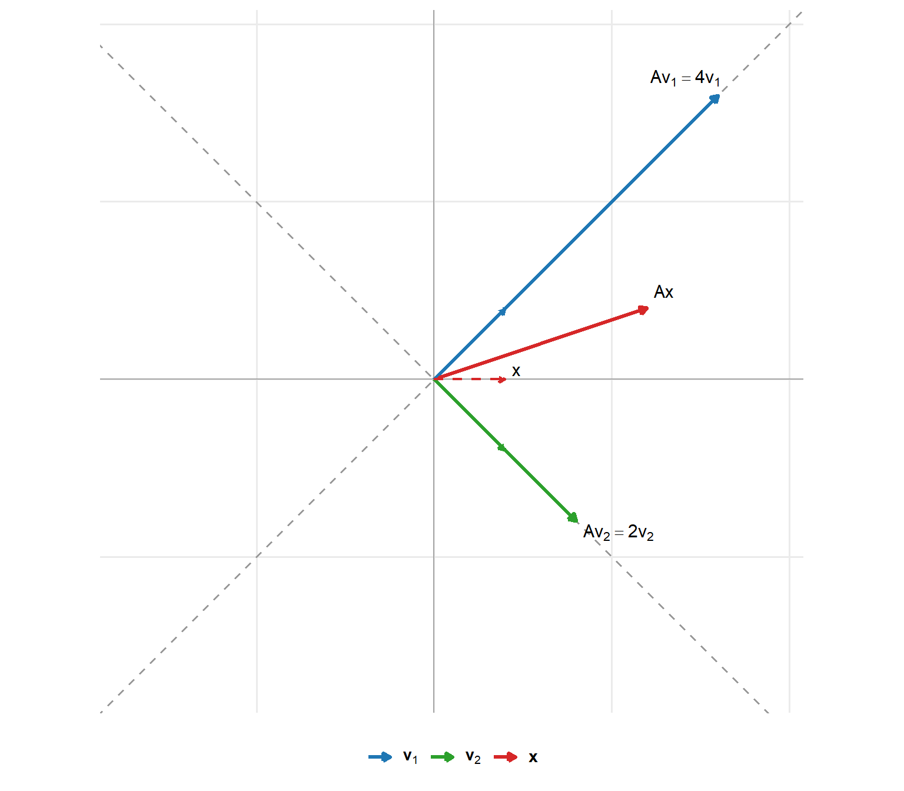
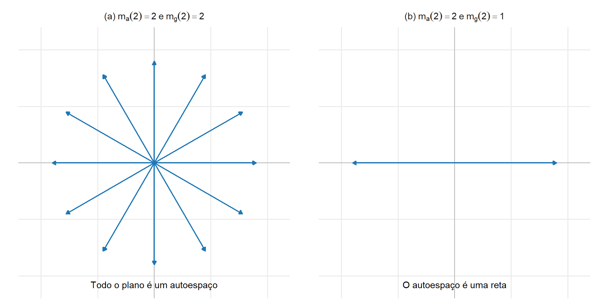
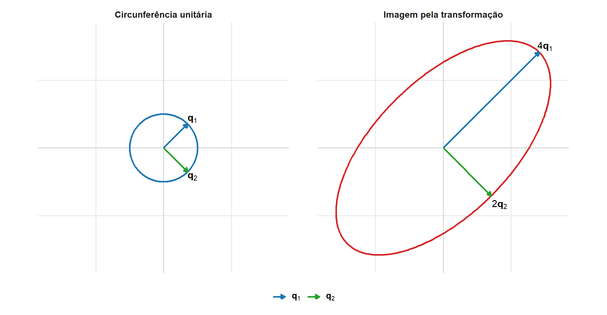
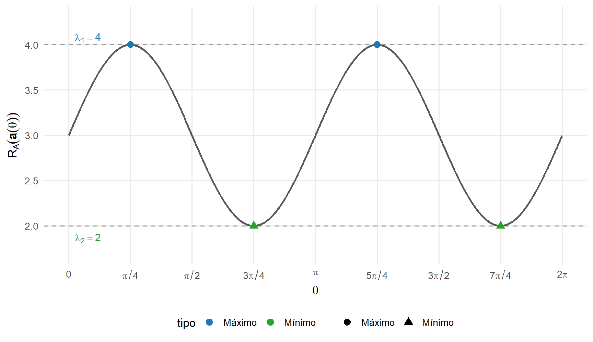

5 Autovalores, autovetores e decomposição espectral
No capítulo anterior, uma transformação linear foi representada por uma matriz e interpretada como uma operação capaz de modificar direções, comprimentos, ângulos e volumes. Quando o domínio e o contradomínio coincidem, a transformação é um operador linear
\[ T_{\mathbf{A}}: \mathbb{R}^p \longrightarrow \mathbb{R}^p, \qquad T_{\mathbf{A}}(\mathbf{x}) = \mathbf{A}\mathbf{x}, \]
representado por uma matriz quadrada
\[ \mathbf{A} \in \mathbb{R}^{p\times p}. \]
Vimos também que a matriz de um operador depende da base utilizada para representá-lo. Uma mudança de base pode produzir uma matriz mais simples, embora o operador linear permaneça o mesmo. Neste capítulo, procuraremos bases especialmente adaptadas à ação do operador.
Algumas direções possuem um comportamento particularmente simples: quando um vetor pertence a uma dessas direções, sua imagem permanece na mesma reta que passa pela origem. A identificação dessas direções conduz aos conceitos de autovalor, autovetor e autoespaço.
Quando existem autovetores linearmente independentes em número suficiente, eles formam uma base na qual a matriz do operador é diagonal. A diagonalização pode, portanto, ser interpretada como uma mudança para um sistema de coordenadas em que a transformação atua separadamente sobre cada direção da base.
Para matrizes simétricas reais, essa simplificação possui propriedades adicionais: todos os autovalores são reais e existe uma base ortonormal de autovetores. A decomposição resultante permitirá interpretar formas quadráticas, matrizes positivas definidas, elipsoides, funções de matrizes e problemas de otimização. Essas estruturas serão retomadas nos capítulos de SVD, covariâncias e técnicas multivariadas.
5.1 Direções invariantes, autovalores e autoespaços
Definição 5.1 (Subespaço invariante) Considere
\[ \mathbf A \in \mathbb R^{p\times p} \]
e um subespaço
\[ \mathcal W \subseteq \mathbb R^p. \]
O subespaço \(\mathcal W\) é invariante sob \(\mathbf A\) quando
\[ \mathbf A\mathbf w \in \mathcal W \]
para todo
\[ \mathbf w \in \mathcal W. \]
Isso significa que a multiplicação por \(\mathbf A\) transforma vetores de \(\mathcal W\) em vetores que permanecem no próprio subespaço \(\mathcal W\).
Um caso particularmente importante ocorre quando o subespaço invariante possui dimensão \(1\).
Seja
\[ \mathbf v \in \mathbb R^p, \qquad \mathbf v\neq\mathbf 0. \]
O subespaço gerado por \(\mathbf v\) é
\[ \mathcal W = \operatorname{span}\{\mathbf v\} = \left\{ c\mathbf v: c\in\mathbb R \right\}. \]
Como \(\mathbf v\neq\mathbf 0\), o conjunto \(\{\mathbf v\}\) é uma base de \(\mathcal W\) e, portanto,
\[ \dim(\mathcal W)=1. \]
Geometricamente, \(\mathcal W\) corresponde a uma reta que passa pela origem e está contida em \(\mathbb R^p\).
Se \(\mathcal W\) é invariante sob \(\mathbf A\), então
\[ \mathbf A\mathbf v \in \mathcal W. \]
Como todos os vetores de \(\mathcal W\) são múltiplos escalares de \(\mathbf v\), existe um escalar \(\lambda\) tal que
\[ \mathbf A\mathbf v = \lambda\mathbf v. \]
Assim, a ação de \(\mathbf A\) sobre \(\mathbf v\) mantém sua imagem na mesma reta gerada por \(\mathbf v\). A magnitude pode ser alterada e, dependendo do sinal de \(\lambda\), também pode ocorrer mudança de sentido.
Exemplo 5.1 (Uma reta invariante em \(\mathbb R^2\)) Considere
\[ \mathbf A = \begin{bmatrix} 2 & 1\\ 1 & 2 \end{bmatrix} \]
e o vetor
\[ \mathbf v = \begin{bmatrix} 1\\ 1 \end{bmatrix}. \]
O subespaço gerado por \(\mathbf v\) é
\[ \mathcal W = \operatorname{span} \left\{ \begin{bmatrix} 1\\ 1 \end{bmatrix} \right\}, \]
que corresponde à reta
\[ x_2=x_1 \]
em \(\mathbb R^2\).
Aplicando \(\mathbf A\) ao vetor \(\mathbf v\),
\[ \begin{aligned} \mathbf A\mathbf v &= \begin{bmatrix} 2 & 1\\ 1 & 2 \end{bmatrix} \begin{bmatrix} 1\\ 1 \end{bmatrix}\\ &= \begin{bmatrix} 3\\ 3 \end{bmatrix} = 3 \begin{bmatrix} 1\\ 1 \end{bmatrix}\\ &= 3\mathbf v. \end{aligned} \]
Portanto,
\[ \mathbf A\mathbf v \in \mathcal W, \]
e a reta \(\mathcal W\) é invariante sob \(\mathbf A\). Nesse caso, a transformação multiplica os vetores dessa direção por um fator igual a \(3\), sem retirar suas imagens da reta.
A relação
\[ \mathbf A\mathbf v = \lambda\mathbf v \]
observada nesse caso conduz às definições de autovalor e autovetor.
Definição 5.2 (Autovalor e autovetor) Seja
\[ \mathbf{A} \in \mathbb{R}^{p\times p}. \]
Um escalar \(\lambda\in\mathbb{R}\) é um autovalor de \(\mathbf{A}\) quando existe um vetor
\[ \mathbf{v} \in \mathbb{R}^p, \qquad \mathbf{v}\neq\mathbf{0}, \]
tal que
\[ \mathbf{A}\mathbf{v} = \lambda\mathbf{v}. \]
O vetor \(\mathbf{v}\) é denominado autovetor de \(\mathbf{A}\) associado ao autovalor \(\lambda\). O par \((\lambda,\mathbf{v})\) é denominado autopar de \(\mathbf{A}\).
A equação
\[ \mathbf{A}\mathbf{v} = \lambda\mathbf{v} \]
mostra que a transformação não combina a direção de \(\mathbf{v}\) com outras direções do espaço. Sua ação sobre esse vetor consiste em alterar seu comprimento e, possivelmente, seu sentido.
O módulo de \(\lambda\) determina a alteração do comprimento:
- se \(|\lambda|>1\), ocorre expansão;
- se \(0<|\lambda|<1\), ocorre contração;
- se \(|\lambda|=1\), o comprimento é preservado;
- se \(\lambda=0\), o vetor é transformado no vetor nulo.
O sinal determina o sentido:
- se \(\lambda>0\), o sentido é preservado;
- se \(\lambda<0\), o sentido é invertido.
Portanto, quando \(\lambda=-1\), o vetor tem seu sentido invertido sem alteração do comprimento. Quando \(\lambda=0\), a reta gerada pelo autovetor continua sendo um subespaço invariante, pois toda a reta é enviada ao vetor nulo, mas sua direção deixa de aparecer na imagem da transformação.
Exemplo 5.2 (Direções invariantes de uma matriz simétrica) Considere
\[ \mathbf{A} = \begin{bmatrix} 3&1\\ 1&3 \end{bmatrix}. \]
Para o vetor
\[ \mathbf{v}_1 = \begin{bmatrix} 1\\ 1 \end{bmatrix}, \]
tem-se
\[ \begin{aligned} \mathbf{A}\mathbf{v}_1 &= \begin{bmatrix} 3&1\\ 1&3 \end{bmatrix} \begin{bmatrix} 1\\ 1 \end{bmatrix}\\ &= \begin{bmatrix} 4\\ 4 \end{bmatrix}\\ &= 4 \begin{bmatrix} 1\\ 1 \end{bmatrix}. \end{aligned} \]
Assim,
\[ \mathbf{A}\mathbf{v}_1 = 4\mathbf{v}_1, \]
e \(\mathbf{v}_1\) é um autovetor associado ao autovalor
\[ \lambda_1=4. \]
Para
\[ \mathbf{v}_2 = \begin{bmatrix} 1\\ -1 \end{bmatrix}, \]
obtém-se
\[ \begin{aligned} \mathbf{A}\mathbf{v}_2 &= \begin{bmatrix} 3&1\\ 1&3 \end{bmatrix} \begin{bmatrix} 1\\ -1 \end{bmatrix}\\ &= \begin{bmatrix} 2\\ -2 \end{bmatrix}\\ &= 2 \begin{bmatrix} 1\\ -1 \end{bmatrix}. \end{aligned} \]
Portanto,
\[ \mathbf{A}\mathbf{v}_2 = 2\mathbf{v}_2, \]
e \(\mathbf{v}_2\) é um autovetor associado ao autovalor
\[ \lambda_2=2. \]
Considere agora
\[ \mathbf{x} = \begin{bmatrix} 1\\ 0 \end{bmatrix}. \]
Sua imagem é
\[ \mathbf{A}\mathbf{x} = \begin{bmatrix} 3\\ 1 \end{bmatrix}. \]
Não existe um escalar \(\lambda\) que satisfaça
\[ \begin{bmatrix} 3\\ 1 \end{bmatrix} = \lambda \begin{bmatrix} 1\\ 0 \end{bmatrix}. \]
Logo, \(\mathbf{x}\) não é um autovetor de \(\mathbf{A}\). A transformação modifica seu comprimento e sua direção.
A Figura fig-direcoes-invariantes compara as imagens dos autovetores \(\mathbf{v}_1\) e \(\mathbf{v}_2\) com a imagem do vetor genérico \(\mathbf{x}\). As retas tracejadas em cinza representam as duas direções invariantes.
As retas tracejadas representam as direções geradas por \(\mathbf{v}_1\) e \(\mathbf{v}_2\). A transformação amplia os vetores por fatores diferentes, mas mantém cada um na reta correspondente. O vetor \(\mathbf{x}\) não pertence a uma direção invariante e sua imagem ocupa outra direção.
Um autovetor não é único. Se \(\mathbf v\) é um autovetor associado ao autovalor \(\lambda\), então qualquer múltiplo não nulo de \(\mathbf v\) também é um autovetor associado ao mesmo autovalor.
Proposição 5.1 (Múltiplos de um autovetor) Se \(\mathbf{v}\) é um autovetor de \(\mathbf{A}\) associado ao autovalor \(\lambda\), então todo múltiplo
\[ c\mathbf{v}, \qquad c\neq0, \]
também é um autovetor associado a \(\lambda\).
Comprovação. Como
\[ \mathbf{A}\mathbf{v} = \lambda\mathbf{v}, \]
pela linearidade,
\[ \begin{aligned} \mathbf{A} \left( c\mathbf{v} \right) &= c\mathbf{A}\mathbf{v}\\ &= c\lambda\mathbf{v}\\ &= \lambda \left( c\mathbf{v} \right). \end{aligned} \]
Como \(c\neq0\) e \(\mathbf{v}\neq\mathbf{0}\), tem-se \(c\mathbf{v}\neq\mathbf{0}\). Portanto, \(c\mathbf{v}\) é um autovetor associado a \(\lambda\).
Para reunir todos os autovetores associados ao mesmo autovalor, reorganiza-se a equação
\[ \mathbf{A}\mathbf{v} = \lambda\mathbf{v} \]
como
\[ \left( \mathbf{A} - \lambda\mathbf{I}_p \right) \mathbf{v} = \mathbf{0}. \]
O conjunto de soluções é o núcleo de
\[ \mathbf{A} - \lambda\mathbf{I}_p. \]
Definição 5.3 (Autoespaço) Se \(\lambda\) é um autovalor de
\[ \mathbf{A} \in \mathbb{R}^{p\times p}, \]
o autoespaço associado a \(\lambda\) é
\[ \mathcal{E}_{\lambda} = \mathcal{N} \left( \mathbf{A} - \lambda\mathbf{I}_p \right). \]
Os autovetores associados a \(\lambda\) são os elementos não nulos de \(\mathcal{E}_{\lambda}\):
\[ \mathcal{E}_{\lambda} \setminus \{\mathbf{0}\}. \]
O vetor nulo pertence a todo autoespaço, mas não é considerado um autovetor. A igualdade
\[ \mathbf{A}\mathbf{0} = \lambda\mathbf{0} \]
é satisfeita para qualquer \(\lambda\) e não identifica uma direção.
Proposição 5.2 (Estrutura e invariância do autoespaço) Se \(\lambda\) é um autovalor de \(\mathbf{A}\), então \(\mathcal{E}_{\lambda}\) é um subespaço não trivial de \(\mathbb{R}^p\) e é invariante sob \(\mathbf{A}\).
Comprovação. Como
\[ \mathcal{E}_{\lambda} = \mathcal{N} \left( \mathbf{A} - \lambda\mathbf{I}_p \right), \]
o autoespaço é o núcleo de uma transformação linear e, portanto, é um subespaço de \(\mathbb{R}^p\).
Como \(\lambda\) é um autovalor, existe pelo menos um vetor não nulo \(\mathbf{v}\) tal que
\[ \left( \mathbf{A} - \lambda\mathbf{I}_p \right) \mathbf{v} = \mathbf{0}. \]
Logo,
\[ \mathcal{E}_{\lambda} \neq \{\mathbf{0}\}. \]
Para qualquer \(\mathbf{w}\in\mathcal{E}_{\lambda}\),
\[ \mathbf{A}\mathbf{w} = \lambda\mathbf{w}. \]
Como \(\mathcal{E}_{\lambda}\) é fechado pela multiplicação por escalares,
\[ \lambda\mathbf{w} \in \mathcal{E}_{\lambda}. \]
Portanto,
\[ \mathbf{A}\mathbf{w} \in \mathcal{E}_{\lambda}, \]
e o autoespaço é invariante sob \(\mathbf{A}\).
Quando
\[ \dim \left( \mathcal{E}_{\lambda} \right) = 1, \]
o autoespaço determina uma única direção invariante. Todos os autovetores associados a \(\lambda\) são múltiplos não nulos de um mesmo vetor.
Quando
\[ \dim \left( \mathcal{E}_{\lambda} \right) > 1, \]
o autovalor está associado a várias direções linearmente independentes. Nesse caso, o objeto geométrico determinado pela matriz é todo o autoespaço. Uma base específica desse subespaço não é necessariamente única.
A definição do autoespaço transforma a busca por autovetores em um problema de núcleo. Para um valor fixado de \(\lambda\), existem autovetores associados precisamente quando
\[ \mathcal{N} \left( \mathbf{A} - \lambda\mathbf{I}_p \right) \neq \{\mathbf{0}\}. \]
Resta, portanto, determinar quais valores de \(\lambda\) tornam esse núcleo não trivial. Essa condição equivale à singularidade de \(\mathbf{A}-\lambda\mathbf{I}_p\) e conduz à equação característica.
5.2 Equação característica, multiplicidades e diagonalização
A definição de autovalor permite verificar se um vetor conhecido determina uma direção invariante. Para encontrar essas direções a partir de uma matriz, é necessário determinar os valores de \(\lambda\) para os quais
\[ \left( \mathbf{A} - \lambda\mathbf{I}_p \right) \mathbf{v} = \mathbf{0} \]
possui soluções não triviais.
Esse é um sistema linear homogêneo.
Se
\[ \mathbf{A} - \lambda\mathbf{I}_p \]
fosse invertível, sua única solução seria \(\mathbf{v}=\mathbf{0}\). Portanto, um autovalor deve tornar essa matriz singular.
Teorema 5.1 (Caracterização dos autovalores pelo determinante) Seja
\[ \mathbf{A} \in \mathbb{R}^{p\times p}. \]
Um escalar \(\lambda\in\mathbb{R}\) é autovalor de \(\mathbf{A}\) se, e somente se,
\[ \det \left( \mathbf{A} - \lambda\mathbf{I}_p \right) = 0. \]
Comprovação. Se \(\lambda\) é autovalor de \(\mathbf{A}\), existe um vetor não nulo \(\mathbf{v}\) tal que
\[ \left( \mathbf{A} - \lambda\mathbf{I}_p \right) \mathbf{v} = \mathbf{0}. \]
Como o sistema possui uma solução não trivial, a matriz
\[ \mathbf{A} - \lambda\mathbf{I}_p \]
não é invertível. Logo,
\[ \det \left( \mathbf{A} - \lambda\mathbf{I}_p \right) = 0. \]
Reciprocamente, se
\[ \det \left( \mathbf{A} - \lambda\mathbf{I}_p \right) = 0, \]
a matriz é singular. Portanto, seu núcleo contém pelo menos um vetor não nulo \(\mathbf{v}\), para o qual
\[ \left( \mathbf{A} - \lambda\mathbf{I}_p \right) \mathbf{v} = \mathbf{0}. \]
Consequentemente,
\[ \mathbf{A}\mathbf{v} = \lambda\mathbf{v}, \]
e \(\lambda\) é autovalor de \(\mathbf{A}\).
Definição 5.4 (Polinômio e equação característicos) O polinômio característico de uma matriz
\[ \mathbf{A} \in \mathbb{R}^{p\times p} \]
é definido por
\[ p_{\mathbf{A}}(\lambda) = \det \left( \mathbf{A} - \lambda\mathbf{I}_p \right). \]
A equação
\[ p_{\mathbf{A}}(\lambda) = 0 \]
é denominada equação característica de \(\mathbf{A}\). (Horn; Johnson, 2013)
Também é possível definir o polinômio característico por
\[ \det \left( \lambda\mathbf{I}_p - \mathbf{A} \right). \]
As duas convenções diferem pelo fator \((-1)^p\) e possuem as mesmas raízes. Portanto, produzem os mesmos autovalores.
O polinômio característico de uma matriz de ordem \(p\) possui grau \(p\). Consideradas suas multiplicidades, ele possui \(p\) raízes no conjunto dos números complexos. Uma matriz real pode ter autovalores reais, autovalores complexos ou ambos.
5.2.1 Determinação dos autovalores e autoespaços
Considere novamente
\[ \mathbf{A} = \begin{bmatrix} 3&1\\ 1&3 \end{bmatrix}. \]
Tem-se
\[ \mathbf{A} - \lambda\mathbf{I}_2 = \begin{bmatrix} 3-\lambda&1\\ 1&3-\lambda \end{bmatrix}. \]
O polinômio característico é
\[ \begin{aligned} p_{\mathbf{A}}(\lambda) &= \det \begin{bmatrix} 3-\lambda&1\\ 1&3-\lambda \end{bmatrix}\\ &= (3-\lambda)^2-1\\ &= \lambda^2-6\lambda+8\\ &= (\lambda-4)(\lambda-2). \end{aligned} \]
Assim, os autovalores são
\[ \lambda_1=4 \qquad \text{e} \qquad \lambda_2=2. \]
Para determinar o autoespaço associado a \(\lambda_1=4\), resolve-se
\[ \left( \mathbf{A} - 4\mathbf{I}_2 \right) \mathbf{v} = \mathbf{0}. \]
Como
\[ \mathbf{A} - 4\mathbf{I}_2 = \begin{bmatrix} -1&1\\ 1&-1 \end{bmatrix}, \]
o sistema conduz a
\[ -v_1+v_2=0, \]
ou seja,
\[ v_2=v_1. \]
Portanto,
\[ \mathcal{E}_4 = \operatorname{span} \left\{ \begin{bmatrix} 1\\ 1 \end{bmatrix} \right\}. \]
Para \(\lambda_2=2\),
\[ \mathbf{A} - 2\mathbf{I}_2 = \begin{bmatrix} 1&1\\ 1&1 \end{bmatrix}, \]
e o sistema correspondente fornece
\[ v_1+v_2=0. \]
Logo,
\[ \mathcal{E}_2 = \operatorname{span} \left\{ \begin{bmatrix} 1\\ -1 \end{bmatrix} \right\}. \]
O procedimento possui duas etapas:
resolver
\[ \det \left( \mathbf{A} - \lambda\mathbf{I}_p \right) = 0 \]
para obter os autovalores;
para cada autovalor \(\lambda\), determinar
\[ \mathcal{E}_{\lambda} = \mathcal{N} \left( \mathbf{A} - \lambda\mathbf{I}_p \right). \]
5.2.2 Autovalores complexos de matrizes reais
As definições de autovalor, autovetor, autoespaço e equação característica foram apresentadas inicialmente no espaço real. Elas se estendem ao espaço complexo substituindo
\[ \mathbb{R}^p \]
por
\[ \mathbb{C}^p \]
e permitindo
\[ \lambda\in\mathbb{C}. \]
Nesse caso, um autovetor complexo é um vetor não nulo \(\mathbf{v}\in\mathbb{C}^p\) que satisfaz
\[ \mathbf{A}\mathbf{v} = \lambda\mathbf{v}. \]
A caracterização
\[ \det \left( \mathbf{A} - \lambda\mathbf{I}_p \right) = 0 \]
permanece válida no espaço complexo.
Nem toda matriz real possui autovalores reais. Considere a rotação de \(90^\circ\) (\(\theta= \frac{\pi}{2}\)),
\[ \mathbf{Q}_{\frac{\pi}{2}} = \begin{bmatrix} \cos\left(\frac{\pi}{2}\right) & -\sin\left(\frac{\pi}{2}\right) \\ \sin\left(\frac{\pi}{2}\right) & \cos\left(\frac{\pi}{2}\right) \end{bmatrix} = \begin{bmatrix} 0&-1\\ 1&0 \end{bmatrix}. \]
Seu polinômio característico é
\[ \begin{aligned} p_{\mathbf{Q}}(\lambda) &= \det \begin{bmatrix} -\lambda&-1\\ 1&-\lambda \end{bmatrix}\\ &= \lambda^2+1. \end{aligned} \]
A equação
\[ \lambda^2+1=0 \]
não possui raízes reais. Suas raízes complexas são
\[ \lambda_1=i \qquad \text{e} \qquad \lambda_2=-i. \]
Portanto, a matriz não possui autovalores reais e, consequentemente, não possui autovetores reais. Geometricamente, nenhuma reta real que passa pela origem permanece invariante sob uma rotação de \(90^\circ\).
Quando a mesma matriz é considerada como um operador em \(\mathbb C^2\), ela possui autovalores e autovetores complexos. Neste capítulo, a interpretação geométrica será desenvolvida principalmente no contexto real. Em particular, toda matriz simétrica real possui autovalores reais e admite uma base ortonormal de autovetores reais.
5.2.3 Independência entre autovetores
Os autovetores associados a autovalores distintos possuem uma propriedade que permite construir bases de direções invariantes.
Teorema 5.2 (Independência de autovetores associados a autovalores distintos) Se
\[ \lambda_1,\ldots,\lambda_r \]
são autovalores distintos de uma matriz \(\mathbf{A}\) e
\[ \mathbf{v}_1,\ldots,\mathbf{v}_r \]
são autovetores associados, respectivamente, a esses autovalores, então
\[ \mathbf{v}_1,\ldots,\mathbf{v}_r \]
são linearmente independentes.
Comprovação. A demonstração será feita por indução sobre \(r\).
Para \(r=1\), o resultado é imediato porque um autovetor é não nulo.
Suponha que o resultado seja válido para \(r-1\) autovetores e considere
\[ c_1\mathbf{v}_1 + \cdots + c_r\mathbf{v}_r = \mathbf{0}. \]
Multiplicando por \(\mathbf{A}\),
\[ c_1\lambda_1\mathbf{v}_1 + \cdots + c_r\lambda_r\mathbf{v}_r = \mathbf{0}. \]
Multiplicando a primeira igualdade por \(\lambda_r\) e subtraindo-a da segunda,
\[ c_1 \left( \lambda_1-\lambda_r \right) \mathbf{v}_1 + \cdots + c_{r-1} \left( \lambda_{r-1}-\lambda_r \right) \mathbf{v}_{r-1} = \mathbf{0}. \]
Pela hipótese de indução,
\[ c_j \left( \lambda_j-\lambda_r \right) = 0, \qquad j=1,\ldots,r-1. \]
Como os autovalores são distintos,
\[ \lambda_j-\lambda_r \neq 0, \]
e, portanto,
\[ c_1=\cdots=c_{r-1}=0. \]
A igualdade original reduz-se a
\[ c_r\mathbf{v}_r = \mathbf{0}. \]
Como \(\mathbf{v}_r\neq\mathbf{0}\), segue que \(c_r=0\). Logo, os autovetores são linearmente independentes.
Uma consequência imediata é que uma matriz de ordem \(p\) com \(p\) autovalores distintos possui uma base formada por autovetores. Essa condição é suficiente para a diagonalização, mas não é necessária: uma matriz também pode ser diagonalizável quando possui autovalores repetidos.
5.2.4 Multiplicidades algébrica e geométrica
Quando um autovalor aparece mais de uma vez como raiz do polinômio característico, é necessário distinguir sua repetição algébrica da dimensão do autoespaço correspondente.
Definição 5.5 (Multiplicidades de um autovalor) Seja \(\lambda\) um autovalor de \(\mathbf{A}\).
A multiplicidade algébrica de \(\lambda\), denotada por
\[ m_a(\lambda), \]
é o número de vezes que \(\lambda\) aparece como raiz do polinômio característico.
A multiplicidade geométrica de \(\lambda\), denotada por
\[ m_g(\lambda), \]
é a dimensão do autoespaço correspondente:
\[ m_g(\lambda) = \dim \left( \mathcal{E}_{\lambda} \right) = \dim \mathcal{N} \left( \mathbf{A} - \lambda\mathbf{I}_p \right). \]
Para todo autovalor,
\[ 1 \leq m_g(\lambda) \leq m_a(\lambda). \]
A multiplicidade geométrica é pelo menos 1 porque o autoespaço contém vetores não nulos. Ela representa o número máximo de autovetores linearmente independentes que podem ser escolhidos para aquele autovalor.
Exemplo 5.3 (Mesma multiplicidade algébrica e diferentes multiplicidades geométricas) Considere as matrizes
\[ \mathbf A_1 = \begin{bmatrix} 2&0\\ 0&2 \end{bmatrix} \]
e
\[ \mathbf A_2 = \begin{bmatrix} 2&1\\ 0&2 \end{bmatrix}. \]
Polinômio característico e multiplicidade algébrica
Para \(\mathbf A_1\),
\[ \begin{aligned} p_{\mathbf A_1}(\lambda) &= \det \left( \mathbf A_1-\lambda\mathbf I_2 \right)\\ &= \det \begin{bmatrix} 2-\lambda&0\\ 0&2-\lambda \end{bmatrix}\\ &= (2-\lambda)^2. \end{aligned} \]
Para \(\mathbf A_2\),
\[ \begin{aligned} p_{\mathbf A_2}(\lambda) &= \det \left( \mathbf A_2-\lambda\mathbf I_2 \right)\\ &= \det \begin{bmatrix} 2-\lambda&1\\ 0&2-\lambda \end{bmatrix}\\ &= (2-\lambda)^2. \end{aligned} \]
Portanto, as duas matrizes possuem o mesmo polinômio característico,
\[ p(\lambda) = (2-\lambda)^2, \]
e, consequentemente, o mesmo autovalor,
\[ \lambda=2. \]
Como o fator \((2-\lambda)\) aparece duas vezes no polinômio característico, o autovalor \(\lambda=2\) possui multiplicidade algébrica
\[ m_a(2)=2 \]
para ambas as matrizes.
Autoespaço de \(\mathbf A_1\)
Para determinar o autoespaço associado a \(\lambda=2\), procuramos todos os vetores
\[ \mathbf v = \begin{bmatrix} v_1\\ v_2 \end{bmatrix} \]
que satisfazem
\[ \mathbf A_1\mathbf v = 2\mathbf v. \]
Essa equação pode ser escrita como
\[ \left( \mathbf A_1-2\mathbf I_2 \right)\mathbf v = \mathbf0. \]
Calculando a matriz,
\[ \begin{aligned} \mathbf A_1-2\mathbf I_2 &= \begin{bmatrix} 2&0\\ 0&2 \end{bmatrix} - \begin{bmatrix} 2&0\\ 0&2 \end{bmatrix}\\ &= \begin{bmatrix} 0&0\\ 0&0 \end{bmatrix}. \end{aligned} \]
Assim, o sistema a ser resolvido é
\[ \begin{bmatrix} 0&0\\ 0&0 \end{bmatrix} \begin{bmatrix} v_1\\ v_2 \end{bmatrix} = \begin{bmatrix} 0\\ 0 \end{bmatrix}, \]
ou seja,
\[ \begin{cases} 0=0,\\ 0=0. \end{cases} \]
O sistema não impõe nenhuma restrição sobre \(v_1\) e \(v_2\). Portanto, ambos são livres e qualquer vetor de \(\mathbb R^2\) pertence ao espaço nulo de \(\mathbf A_1-2\mathbf I_2\).
Logo,
\[ E_2 = \mathcal N \left( \mathbf A_1-2\mathbf I_2 \right) = \mathbb R^2. \]
Como
\[ \dim(\mathbb R^2)=2, \]
temos
\[ m_g(2) = \dim(E_2) = 2. \]
Assim, todo vetor não nulo de \(\mathbb R^2\) é um autovetor de \(\mathbf A_1\) associado ao autovalor \(\lambda=2\).
Autoespaço de \(\mathbf A_2\)
Para \(\mathbf A_2\), procuramos novamente os vetores
\[ \mathbf v = \begin{bmatrix} v_1\\ v_2 \end{bmatrix} \]
que satisfazem
\[ \left( \mathbf A_2-2\mathbf I_2 \right)\mathbf v = \mathbf0. \]
Calculando,
\[ \begin{aligned} \mathbf A_2-2\mathbf I_2 &= \begin{bmatrix} 2&1\\ 0&2 \end{bmatrix} - \begin{bmatrix} 2&0\\ 0&2 \end{bmatrix}\\ &= \begin{bmatrix} 0&1\\ 0&0 \end{bmatrix}. \end{aligned} \]
Portanto,
\[ \begin{bmatrix} 0&1\\ 0&0 \end{bmatrix} \begin{bmatrix} v_1\\ v_2 \end{bmatrix} = \begin{bmatrix} 0\\ 0 \end{bmatrix}. \]
Efetuando a multiplicação,
\[ \begin{bmatrix} v_2\\ 0 \end{bmatrix} = \begin{bmatrix} 0\\ 0 \end{bmatrix}, \]
o que corresponde ao sistema
\[ \begin{cases} v_2=0,\\ 0=0. \end{cases} \]
Nesse caso, \(v_2\) deve ser igual a zero, enquanto \(v_1\) permanece livre. Assim, todo vetor do autoespaço possui a forma
\[ \mathbf v = \begin{bmatrix} v_1\\ 0 \end{bmatrix} = v_1 \begin{bmatrix} 1\\ 0 \end{bmatrix}. \]
Logo,
\[ E_2 = \mathcal N \left( \mathbf A_2-2\mathbf I_2 \right) = \operatorname{span} \left\{ \begin{bmatrix} 1\\ 0 \end{bmatrix} \right\}. \]
Esse autoespaço possui uma única direção linearmente independente. Portanto,
\[ m_g(2) = \dim(E_2) = 1. \]
As duas matrizes possuem, portanto, o mesmo autovalor \(\lambda=2\) e a mesma multiplicidade algébrica,
\[ m_a(2)=2, \]
mas apresentam multiplicidades geométricas diferentes:
\[ m_g(2) = \begin{cases} 2, & \text{para }\mathbf A_1,\\ 1, & \text{para }\mathbf A_2. \end{cases} \]
A diferença decorre da dimensão dos respectivos autoespaços. Para \(\mathbf A_1\), o autoespaço é todo o plano \(\mathbb R^2\); para \(\mathbf A_2\), o autoespaço é apenas a reta gerada por \((1,0)^\top\).
A Figura fig-multiplicidades compara as estruturas dos dois autoespaços.

As duas matrizes possuem o mesmo autovalor com a mesma multiplicidade algébrica. A diferença entre as multiplicidades geométricas determina se existem autovetores suficientes para formar uma base.
5.2.5 Diagonalização
No capítulo anterior, vimos que a matriz de um operador depende da base utilizada para representá-lo. A diagonalização corresponde à escolha de uma base particularmente conveniente: uma base formada por autovetores.
Considere uma matriz
\[\mathbf{A}\in\mathbb{R}^{p\times p}\]
e suponha que exista uma base de \(\mathbb{R}^p\) formada por autovetores de \(\mathbf{A}\),
\[ \mathcal{B}_{\mathbf{A}} = \{ \mathbf{v}_1,\ldots,\mathbf{v}_p \}. \]
A matriz dessa base é
\[ \mathbf{B}_{\mathbf{A}} = \begin{bmatrix} \mathbf{v}_1& \cdots& \mathbf{v}_p \end{bmatrix}. \]
Como os vetores da base são linearmente independentes, \(\mathbf{B}_{\mathbf{A}}\) é invertível.
Se
\[ \mathbf{A}\mathbf{v}_j = \lambda_j\mathbf{v}_j, \qquad j=1,\ldots,p, \]
e
\[ \boldsymbol{\Lambda}_{\mathbf{A}} = \operatorname{diag} \left( \lambda_1,\ldots,\lambda_p \right), \]
então
\[ \mathbf{A}\mathbf{B}_{\mathbf{A}} = \mathbf{B}_{\mathbf{A}} \boldsymbol{\Lambda}_{\mathbf{A}}. \]
Multiplicando à esquerda por \(\mathbf{B}_{\mathbf{A}}^{-1}\),
\[ \mathbf{B}_{\mathbf{A}}^{-1} \mathbf{A} \mathbf{B}_{\mathbf{A}} = \boldsymbol{\Lambda}_{\mathbf{A}}. \]
Definição 5.6 (Matriz diagonalizável) Uma matriz
\[\mathbf{A}\in\mathbb{R}^{p\times p}\]
é diagonalizável sobre \(\mathbb{R}\) quando existe uma base \(\mathcal{B}_{\mathbf{A}}\) de \(\mathbb{R}^p\) formada por autovetores de \(\mathbf{A}\).
Equivalentemente, existem uma matriz invertível \(\mathbf{B}_{\mathbf{A}}\) e uma matriz diagonal \(\boldsymbol{\Lambda}_{\mathbf{A}}\) tais que
\[ \mathbf{A} = \mathbf{B}_{\mathbf{A}} \boldsymbol{\Lambda}_{\mathbf{A}} \mathbf{B}_{\mathbf{A}}^{-1}. \]
A ordem das colunas de \(\mathbf{B}_{\mathbf{A}}\) deve coincidir com a ordem dos autovalores em \(\boldsymbol{\Lambda}_{\mathbf{A}}\).
Pela notação de mudança de base desenvolvida no capítulo anterior,
\[ [T_{\mathbf{A}}]_{\mathcal{B}_{\mathbf{A}}\leftarrow\mathcal{B}_{\mathbf{A}}} = \mathbf{B}_{\mathbf{A}}^{-1} \mathbf{A} \mathbf{B}_{\mathbf{A}} = \boldsymbol{\Lambda}_{\mathbf{A}}. \]
Assim, \(\boldsymbol{\Lambda}_{\mathbf{A}}\) é a matriz do mesmo operador quando tanto o domínio quanto o contradomínio são representados na base de autovetores.
Para qualquer vetor \(\mathbf{x}\in\mathbb{R}^p\), suas coordenadas nessa base são
\[ \mathbf{z} = [\mathbf{x}]_{\mathcal{B}_{\mathbf{A}}} = \mathbf{B}_{\mathbf{A}}^{-1}\mathbf{x}, \]
de modo que
\[ \mathbf{x} = \mathbf{B}_{\mathbf{A}}\mathbf{z}. \]
Nas coordenadas da base de autovetores,
\[ [T_{\mathbf{A}}(\mathbf{x})]_{\mathcal{B}_{\mathbf{A}}} = \boldsymbol{\Lambda}_{\mathbf{A}} [\mathbf{x}]_{\mathcal{B}_{\mathbf{A}}}. \]
Como
\[ \boldsymbol{\Lambda}_{\mathbf{A}} \mathbf{z} = \begin{bmatrix} \lambda_1z_1\\ \vdots\\ \lambda_pz_p \end{bmatrix}, \]
a transformação atua separadamente sobre cada coordenada: a componente correspondente ao autovetor \(\mathbf{v}_j\) é multiplicada por \(\lambda_j\).
A diagonalização é, portanto, uma mudança para um sistema de coordenadas no qual as direções da base são invariantes e a ação do operador deixa de misturar coordenadas.
Teorema 5.3 (Critérios de diagonalização) Seja
\[ \mathbf{A} \in \mathbb{F}^{p\times p}, \]
em que \(\mathbb{F}\) representa \(\mathbb{R}\) ou \(\mathbb{C}\), e suponha que seu polinômio característico se decomponha em fatores lineares sobre \(\mathbb{F}\).
São equivalentes:
\(\mathbf{A}\) é diagonalizável sobre \(\mathbb{F}\);
\(\mathbf{A}\) possui \(p\) autovetores linearmente independentes em \(\mathbb{F}^p\);
existe uma base de \(\mathbb{F}^p\) formada por autovetores de \(\mathbf{A}\);
a soma das dimensões dos autoespaços é igual a \(p\);
para cada autovalor \(\lambda\),
\[ m_g(\lambda) = m_a(\lambda). \]
O requisito de decomposição do polinômio característico é necessário porque uma matriz real pode não possuir todos os seus autovalores em \(\mathbb{R}\). A matriz de rotação \(\mathbf{Q}(\pi/2)\) não é diagonalizável sobre \(\mathbb{R}\), mas é diagonalizável sobre \(\mathbb{C}\), pois possui dois autovalores complexos distintos.
Uma condição suficiente para a diagonalização é a existência de \(p\) autovalores distintos. Nesse caso, o Teorema thm-autovetores-autovalores-distintos garante \(p\) autovetores linearmente independentes.
Autovalores repetidos não impedem a diagonalização. Para
\[ \mathbf{A}_1 = 2\mathbf{I}_2, \]
tem-se
\[ m_g(2) = m_a(2) = 2, \]
e a matriz é diagonalizável.
Para
\[ \mathbf{A}_2 = \begin{bmatrix} 2&1\\ 0&2 \end{bmatrix}, \]
tem-se
\[ m_g(2)=1 < m_a(2)=2. \]
A matriz não possui autovetores linearmente independentes em número suficiente para formar uma base e, portanto, não é diagonalizável.
5.2.6 Potências de uma matriz diagonalizável
A representação diagonal também simplifica o cálculo de potências. Se
\[ \mathbf{A} = \mathbf{B}_{\mathbf{A}} \boldsymbol{\Lambda}_{\mathbf{A}} \mathbf{B}_{\mathbf{A}}^{-1}, \]
então
\[ \begin{aligned} \mathbf{A}^2 &= \mathbf{B}_{\mathbf{A}} \boldsymbol{\Lambda}_{\mathbf{A}} \mathbf{B}_{\mathbf{A}}^{-1} \mathbf{B}_{\mathbf{A}} \boldsymbol{\Lambda}_{\mathbf{A}} \mathbf{B}_{\mathbf{A}}^{-1}\\ &= \mathbf{B}_{\mathbf{A}} \boldsymbol{\Lambda}_{\mathbf{A}}^2 \mathbf{B}_{\mathbf{A}}^{-1}. \end{aligned} \]
De forma geral, para todo inteiro \(k\geq0\),
\[ \mathbf{A}^k = \mathbf{B}_{\mathbf{A}} \boldsymbol{\Lambda}_{\mathbf{A}}^k \mathbf{B}_{\mathbf{A}}^{-1}. \]
Como \(\boldsymbol{\Lambda}_{\mathbf{A}}\) é diagonal,
\[ \boldsymbol{\Lambda}_{\mathbf{A}}^k = \operatorname{diag} \left( \lambda_1^k,\ldots,\lambda_p^k \right). \]
Assim, a aplicação repetida do operador pode ser analisada coordenada a coordenada na base de autovetores: após \(k\) aplicações, a coordenada associada a \(\mathbf{v}_j\) é multiplicada por \(\lambda_j^k\).
Para matrizes quadradas arbitrárias, a diagonalização pode falhar. Para matrizes simétricas reais, existe sempre uma base ortonormal de autovetores. Essa propriedade conduz a uma diagonalização que preserva a geometria euclidiana.
5.3 Matrizes simétricas e decomposição espectral
A diagonalização estudada na seção anterior pode falhar para matrizes quadradas arbitrárias. Uma matriz pode não possuir autovalores reais ou pode não apresentar autovetores linearmente independentes em número suficiente para formar uma base.
As matrizes simétricas reais possuem uma estrutura mais regular. Retomando a Definição def-matriz-simetrica, uma matriz
\[ \mathbf{A} \in \mathbb{R}^{p\times p} \]
é simétrica quando
\[ \mathbf{A}^{\top} = \mathbf{A}. \]
Para essa classe de matrizes, todos os autovalores são reais e os autoespaços associados a autovalores distintos são ortogonais. Como consequência, existe uma base ortonormal de \(\mathbb{R}^p\) formada por autovetores de \(\mathbf{A}\).
Teorema 5.4 (Teorema Espectral para matrizes simétricas reais) Seja
\[ \mathbf{A} \in \mathbb{R}^{p\times p} \]
uma matriz simétrica. Então:
todos os autovalores de \(\mathbf{A}\) são reais;
autoespaços associados a autovalores distintos são ortogonais;
existe uma base ortonormal de \(\mathbb{R}^p\) formada por autovetores de \(\mathbf{A}\);
existe uma matriz ortogonal
\[ \mathbf{Q}_{\mathbf{A}} \in \mathbb{R}^{p\times p} \]
e uma matriz diagonal
\[ \boldsymbol{\Lambda}_{\mathbf{A}} \in \mathbb{R}^{p\times p} \]
tais que
\[ \mathbf{A} = \mathbf{Q}_{\mathbf{A}} \boldsymbol{\Lambda}_{\mathbf{A}} \mathbf{Q}_{\mathbf{A}}^{\top}. \]
Comprovação. Para demonstrar que os autovalores são reais, considere um autovalor possivelmente complexo \(\lambda\) e um autovetor complexo não nulo \(\mathbf{z}\), de modo que
\[ \mathbf{A}\mathbf{z} = \lambda\mathbf{z}. \]
Como \(\mathbf{A}\) é real e simétrica, ela também é hermitiana:
\[ \mathbf{A}^{*} = \mathbf{A}, \]
em que \(*\) representa a transposta conjugada.
Multiplicando a equação de autovalor à esquerda por \(\mathbf{z}^{*}\),
\[ \mathbf{z}^{*}\mathbf{A}\mathbf{z} = \lambda \mathbf{z}^{*}\mathbf{z}. \]
A quantidade
\[ \mathbf{z}^{*}\mathbf{A}\mathbf{z} \]
é real, pois
\[ \left( \mathbf{z}^{*}\mathbf{A}\mathbf{z} \right)^{*} = \mathbf{z}^{*}\mathbf{A}^{*}\mathbf{z} = \mathbf{z}^{*}\mathbf{A}\mathbf{z}. \]
Além disso,
\[ \mathbf{z}^{*}\mathbf{z} > 0. \]
Portanto,
\[ \lambda = \frac{ \mathbf{z}^{*}\mathbf{A}\mathbf{z} }{ \mathbf{z}^{*}\mathbf{z} } \]
é real.
Considere agora dois autovetores reais \(\mathbf{v}_i\) e \(\mathbf{v}_j\), associados a autovalores distintos \(\lambda_i\) e \(\lambda_j\). Como
\[ \mathbf{A}\mathbf{v}_i = \lambda_i\mathbf{v}_i \]
e
\[ \mathbf{A}\mathbf{v}_j = \lambda_j\mathbf{v}_j, \]
tem-se
\[ \begin{aligned} \lambda_i \mathbf{v}_i^{\top}\mathbf{v}_j &= \left( \mathbf{A}\mathbf{v}_i \right)^{\top} \mathbf{v}_j\\ &= \mathbf{v}_i^{\top} \mathbf{A}^{\top} \mathbf{v}_j\\ &= \mathbf{v}_i^{\top} \mathbf{A} \mathbf{v}_j\\ &= \lambda_j \mathbf{v}_i^{\top}\mathbf{v}_j. \end{aligned} \]
Logo,
\[ \left( \lambda_i-\lambda_j \right) \mathbf{v}_i^{\top}\mathbf{v}_j = 0. \]
Como \(\lambda_i\neq\lambda_j\),
\[ \mathbf{v}_i^{\top}\mathbf{v}_j = 0. \]
Portanto, os autoespaços associados a autovalores distintos são ortogonais.
A existência de uma base ortonormal de autovetores pode ser demonstrada por indução sobre a ordem \(p\) da matriz. Para \(p=1\), o resultado é imediato.
Suponha agora \(p>1\). Pelo Teorema Fundamental da Álgebra, o polinômio característico de \(\mathbf{A}\) possui pelo menos uma raiz em \(\mathbb{C}\). Pela primeira parte da demonstração, essa raiz é real. Denote-a por \(\lambda_1\).
Como
\[ \det \left( \mathbf{A} - \lambda_1\mathbf{I}_p \right) = 0, \]
a matriz real
\[ \mathbf{A} - \lambda_1\mathbf{I}_p \]
é singular e possui um vetor não nulo real em seu núcleo. Normalizando esse vetor, obtém-se um autovetor unitário \(\mathbf{q}_1\).
Considere o complemento ortogonal
\[ \mathcal{W} = \operatorname{span} \left\{ \mathbf{q}_1 \right\}^{\perp}. \]
Para qualquer \(\mathbf{x}\in\mathcal{W}\),
\[ \mathbf{q}_1^{\top}\mathbf{x} = 0. \]
Como \(\mathbf{A}\) é simétrica,
\[ \begin{aligned} \mathbf{q}_1^{\top} \mathbf{A}\mathbf{x} &= \left( \mathbf{A}\mathbf{q}_1 \right)^{\top} \mathbf{x}\\ &= \lambda_1 \mathbf{q}_1^{\top}\mathbf{x}\\ &= 0. \end{aligned} \]
Logo,
\[ \mathbf{A}\mathbf{x} \in \mathcal{W}, \]
e \(\mathcal{W}\) é invariante sob \(\mathbf{A}\).
A restrição de \(\mathbf{A}\) a \(\mathcal{W}\) permanece simétrica. Como
\[ \dim(\mathcal{W}) = p-1, \]
a hipótese de indução garante uma base ortonormal
\[ \mathbf{q}_2,\ldots,\mathbf{q}_p \]
de \(\mathcal{W}\) formada por autovetores da restrição e, consequentemente, de \(\mathbf{A}\).
Assim,
\[ \mathbf{q}_1,\ldots,\mathbf{q}_p \]
formam uma base ortonormal de \(\mathbb{R}^p\) composta por autovetores de \(\mathbf{A}\).
Organizando esses vetores nas colunas de
\[ \mathbf{Q}_{\mathbf{A}} = \begin{bmatrix} \mathbf{q}_1& \cdots& \mathbf{q}_p \end{bmatrix}, \]
tem-se
\[ \mathbf{Q}_{\mathbf{A}}^{\top} \mathbf{Q}_{\mathbf{A}} = \mathbf{I}_p. \]
Portanto,
\[ \mathbf{Q}_{\mathbf{A}}^{-1} = \mathbf{Q}_{\mathbf{A}}^{\top}. \]
Definindo
\[ \boldsymbol{\Lambda}_{\mathbf{A}} = \operatorname{diag} \left( \lambda_1,\ldots,\lambda_p \right), \]
a relação
\[ \mathbf{A} \mathbf{Q}_{\mathbf{A}} = \mathbf{Q}_{\mathbf{A}} \boldsymbol{\Lambda}_{\mathbf{A}} \]
fornece
\[ \mathbf{A} = \mathbf{Q}_{\mathbf{A}} \boldsymbol{\Lambda}_{\mathbf{A}} \mathbf{Q}_{\mathbf{A}}^{\top}. \]
A representação
\[ \mathbf{A} = \mathbf{Q}_{\mathbf{A}} \boldsymbol{\Lambda}_{\mathbf{A}} \mathbf{Q}_{\mathbf{A}}^{\top} \]
é denominada decomposição espectral de \(\mathbf{A}\). Ela é uma diagonalização ortogonal.
Considere a base ortonormal de autovetores
\[ \mathcal{B}_{\mathbf{A}} = \{ \mathbf{q}_1,\ldots,\mathbf{q}_p \}. \]
A matriz dessa base é
\[ \mathbf{Q}_{\mathbf{A}} = \begin{bmatrix} \mathbf{q}_1& \cdots& \mathbf{q}_p \end{bmatrix}. \]
Assim, no caso simétrico, a matriz da base de autovetores introduzida na seção anterior pode ser escolhida ortogonal:
\[ \mathbf{B}_{\mathbf{A}} = \mathbf{Q}_{\mathbf{A}}, \]
com
\[ \mathbf{Q}_{\mathbf{A}}^{-1} = \mathbf{Q}_{\mathbf{A}}^{\top}. \]
Pela notação de coordenadas desenvolvida no capítulo anterior,
\[ [\mathbf{x}]_{\mathcal{B}_{\mathbf{A}}} = \mathbf{Q}_{\mathbf{A}}^{\top} \mathbf{x}. \]
Denotando
\[ \mathbf{z} = [\mathbf{x}]_{\mathcal{B}_{\mathbf{A}}}, \]
tem-se
\[ \mathbf{x} = \mathbf{Q}_{\mathbf{A}} \mathbf{z}. \]
A matriz do operador nessa base é
\[ [T_{\mathbf{A}}]_{\mathcal{B}_{\mathbf{A}}\leftarrow\mathcal{B}_{\mathbf{A}}} = \mathbf{Q}_{\mathbf{A}}^{\top} \mathbf{A} \mathbf{Q}_{\mathbf{A}} = \boldsymbol{\Lambda}_{\mathbf{A}}. \]
Consequentemente,
\[ [T_{\mathbf{A}}(\mathbf{x})]_{\mathcal{B}_{\mathbf{A}}} = \boldsymbol{\Lambda}_{\mathbf{A}} [\mathbf{x}]_{\mathcal{B}_{\mathbf{A}}}. \]
Em coordenadas canônicas,
\[ \begin{aligned} \mathbf{A}\mathbf{x} &= \mathbf{Q}_{\mathbf{A}} \boldsymbol{\Lambda}_{\mathbf{A}} \mathbf{Q}_{\mathbf{A}}^{\top} \mathbf{x}\\ &= \mathbf{Q}_{\mathbf{A}} \boldsymbol{\Lambda}_{\mathbf{A}} \mathbf{z}. \end{aligned} \]
A ação da matriz pode ser interpretada em três etapas:
- \(\mathbf{Q}_{\mathbf{A}}^{\top}\) converte o vetor para as coordenadas da base ortonormal de autovetores;
- \(\boldsymbol{\Lambda}_{\mathbf{A}}\) multiplica separadamente cada coordenada pelo autovalor correspondente;
- \(\mathbf{Q}_{\mathbf{A}}\) reconstrói o vetor nas coordenadas canônicas.
Assim, uma matriz simétrica atua por fatores escalares independentes em direções ortogonais. Quando algum autovalor é negativo, o escalonamento na direção correspondente inclui também a inversão do sentido.
5.3.1 Decomposição espectral do exemplo condutor
Exemplo 5.4 (Decomposição espectral de uma matriz simétrica) Considere novamente
\[ \mathbf{A} = \begin{bmatrix} 3&1\\ 1&3 \end{bmatrix}. \]
Os autovalores são
\[ \lambda_1=4 \qquad \text{e} \qquad \lambda_2=2. \]
Os autovetores
\[ \mathbf{v}_1 = \begin{bmatrix} 1\\ 1 \end{bmatrix} \]
e
\[ \mathbf{v}_2 = \begin{bmatrix} 1\\ -1 \end{bmatrix} \]
são ortogonais, pois
\[ \mathbf{v}_1^{\top}\mathbf{v}_2 = 0. \]
Normalizando-os, obtêm-se
\[ \mathbf{q}_1 = \frac{1}{\sqrt{2}} \begin{bmatrix} 1\\ 1 \end{bmatrix} \]
e
\[ \mathbf{q}_2 = \frac{1}{\sqrt{2}} \begin{bmatrix} 1\\ -1 \end{bmatrix}. \]
Portanto,
\[ \mathcal{B}_{\mathbf{A}} = \{ \mathbf{q}_1,\mathbf{q}_2 \} \]
é uma base ortonormal de autovetores de \(\mathbb{R}^2\).
A matriz dessa base é a matriz ortogonal
\[ \mathbf{Q}_{\mathbf{A}} = \frac{1}{\sqrt{2}} \begin{bmatrix} 1&1\\ 1&-1 \end{bmatrix}, \]
e a matriz diagonal de autovalores é
\[ \boldsymbol{\Lambda}_{\mathbf{A}} = \begin{bmatrix} 4&0\\ 0&2 \end{bmatrix}. \]
Consequentemente,
\[ \mathbf{A} = \mathbf{Q}_{\mathbf{A}} \boldsymbol{\Lambda}_{\mathbf{A}} \mathbf{Q}_{\mathbf{A}}^{\top}. \]
De fato,
\[ \begin{aligned} \mathbf{Q}_{\mathbf{A}} \boldsymbol{\Lambda}_{\mathbf{A}} \mathbf{Q}_{\mathbf{A}}^{\top} &= \frac{1}{\sqrt{2}} \begin{bmatrix} 1&1\\ 1&-1 \end{bmatrix} \begin{bmatrix} 4&0\\ 0&2 \end{bmatrix} \frac{1}{\sqrt{2}} \begin{bmatrix} 1&1\\ 1&-1 \end{bmatrix}\\ &= \begin{bmatrix} 3&1\\ 1&3 \end{bmatrix}. \end{aligned} \]
Na direção de \(\mathbf{q}_1\), a transformação multiplica o comprimento por 4. Na direção ortogonal \(\mathbf{q}_2\), multiplica o comprimento por 2.
A Figura fig-interpretacao-espectral mostra a circunferência unitária em \(\mathbb{R}^2\) e sua imagem pela matriz \(\mathbf{A}\). Como os dois autovalores são positivos, a imagem é uma elipse cujos semieixos possuem comprimentos 4 e 2 e estão alinhados aos autovetores.

Na base canônica, a ação da matriz combina as duas coordenadas. Na base formada por \(\mathbf{q}_1\) e \(\mathbf{q}_2\), a transformação apenas multiplica as coordenadas por 4 e 2.
Para uma matriz simétrica arbitrária, os comprimentos dos semieixos da imagem da esfera unitária em \(\mathbb{R}^p\) são determinados por
\[ |\lambda_1|, \ldots, |\lambda_p|. \]
Autovalores negativos também invertem o sentido ao longo das direções correspondentes. Autovalores nulos colapsam os respectivos eixos, reduzindo a dimensão da imagem.
5.3.2 Forma aditiva da decomposição espectral
Como
\[ \mathbf{Q}_{\mathbf{A}} = \begin{bmatrix} \mathbf{q}_1& \cdots& \mathbf{q}_p \end{bmatrix} \]
e
\[ \boldsymbol{\Lambda}_{\mathbf{A}} = \operatorname{diag} \left( \lambda_1,\ldots,\lambda_p \right), \]
a decomposição espectral também pode ser escrita como
\[ \mathbf{A} = \sum_{j=1}^{p} \lambda_j \mathbf{q}_j \mathbf{q}_j^{\top}. \]
Cada matriz
\[ \mathbf{q}_j \mathbf{q}_j^{\top} \]
é o projetor ortogonal sobre a reta gerada por \(\mathbf{q}_j\). Assim,
\[ \mathbf{A}\mathbf{x} = \sum_{j=1}^{p} \lambda_j \mathbf{q}_j \mathbf{q}_j^{\top} \mathbf{x}. \]
A transformação pode ser interpretada como:
- projetar \(\mathbf{x}\) sobre cada direção espectral;
- multiplicar cada projeção pelo autovalor correspondente;
- somar as parcelas resultantes.
No exemplo,
\[ \mathbf{A} = 4 \mathbf{q}_1 \mathbf{q}_1^{\top} + 2 \mathbf{q}_2 \mathbf{q}_2^{\top}. \]
5.3.3 Projetores sobre autoespaços
Quando um autovalor possui multiplicidade maior que 1, os autovetores individuais associados a ele não são únicos. O autoespaço, entretanto, é determinado pela matriz.
Considere os autovalores distintos
\[ \lambda^{(1)}, \ldots, \lambda^{(s)} \]
de \(\mathbf{A}\). Para cada autovalor \(\lambda^{(h)}\), seja
\[ \mathbf{Q}_h \]
uma matriz cujas colunas formam uma base ortonormal do autoespaço correspondente.
Define-se o projetor espectral
\[ \boldsymbol{\Pi}_{\lambda^{(h)}} = \mathbf{Q}_h \mathbf{Q}_h^{\top}. \]
Esse projetor não depende da base ortonormal escolhida dentro do autoespaço.
Proposição 5.3 (Decomposição por projetores espectrais) Se \(\mathbf{A}\) é simétrica e possui autovalores distintos
\[ \lambda^{(1)}, \ldots, \lambda^{(s)}, \]
então
\[ \mathbf{A} = \sum_{h=1}^{s} \lambda^{(h)} \boldsymbol{\Pi}_{\lambda^{(h)}}. \]
Além disso,
\[ \boldsymbol{\Pi}_{\lambda^{(h)}}^{\top} = \boldsymbol{\Pi}_{\lambda^{(h)}}, \]
\[ \boldsymbol{\Pi}_{\lambda^{(h)}}^2 = \boldsymbol{\Pi}_{\lambda^{(h)}}, \]
\[ \boldsymbol{\Pi}_{\lambda^{(h)}} \boldsymbol{\Pi}_{\lambda^{(\ell)}} = \mathbf{0}, \qquad h\neq\ell, \]
e
\[ \sum_{h=1}^{s} \boldsymbol{\Pi}_{\lambda^{(h)}} = \mathbf{I}_p. \]
Comprovação. As colunas de \(\mathbf{Q}_h\) são ortonormais. Portanto,
\[ \boldsymbol{\Pi}_{\lambda^{(h)}} = \mathbf{Q}_h \mathbf{Q}_h^{\top} \]
é o projetor ortogonal sobre o autoespaço associado a \(\lambda^{(h)}\). Pela Proposição prp-propriedades-matriz-projecao, ele é simétrico e idempotente.
Autoespaços associados a autovalores distintos são ortogonais. Logo,
\[ \mathbf{Q}_h^{\top}\mathbf{Q}_{\ell} = \mathbf{0} \]
para \(h\neq\ell\), e
\[ \begin{aligned} \boldsymbol{\Pi}_{\lambda^{(h)}} \boldsymbol{\Pi}_{\lambda^{(\ell)}} &= \mathbf{Q}_h \mathbf{Q}_h^{\top} \mathbf{Q}_{\ell} \mathbf{Q}_{\ell}^{\top}\\ &= \mathbf{0}. \end{aligned} \]
A soma direta ortogonal de todos os autoespaços é \(\mathbb{R}^p\). Por isso,
\[ \sum_{h=1}^{s} \boldsymbol{\Pi}_{\lambda^{(h)}} = \mathbf{I}_p. \]
Agrupando na decomposição espectral todos os autovetores associados ao mesmo autovalor,
\[ \mathbf{A} = \sum_{h=1}^{s} \lambda^{(h)} \boldsymbol{\Pi}_{\lambda^{(h)}}. \]
A decomposição por projetores separa o que depende de uma escolha de base do que é determinado pelo operador. Quando um autovalor é simples, o projetor correspondente possui posto 1:
\[ \boldsymbol{\Pi}_{\lambda} = \mathbf{q}\mathbf{q}^{\top}. \]
Quando sua multiplicidade geométrica é maior que 1, o projetor representa todo o autoespaço e possui posto igual à sua dimensão.
5.3.4 Não unicidade da matriz de autovetores
A matriz
\[ \mathbf{Q}_{\mathbf{A}} \]
não é necessariamente única.
Mesmo quando todos os autovalores são distintos, cada autovetor pode ser substituído por seu oposto:
\[ \mathbf{q}_j \longmapsto -\mathbf{q}_j. \]
A ordem dos autovetores também pode ser alterada, desde que a mesma alteração seja aplicada aos autovalores em
\[ \boldsymbol{\Lambda}_{\mathbf{A}}. \]
Quando há autovalores repetidos, qualquer base ortonormal do autoespaço correspondente pode ser utilizada.
Essas alterações não modificam a matriz original nem os projetores espectrais. O sinal, a ordem e a base escolhida dentro de um autoespaço são elementos da representação; os autovalores, os autoespaços e seus projetores são propriedades do operador.
A decomposição espectral fornece uma base ortonormal na qual formas quadráticas, determinantes, traços, postos, inversas e superfícies de nível podem ser analisados diretamente a partir dos autovalores.
5.4 Consequências da decomposição espectral
Considere uma matriz simétrica
\[ \mathbf{A} \in \mathbb{R}^{p\times p} \]
com decomposição espectral
\[ \mathbf{A} = \mathbf{Q}_{\mathbf{A}} \boldsymbol{\Lambda}_{\mathbf{A}} \mathbf{Q}_{\mathbf{A}}^{\top}, \]
em que
\[ \mathbf{Q}_{\mathbf{A}} = \begin{bmatrix} \mathbf{q}_1& \cdots& \mathbf{q}_p \end{bmatrix} \]
é ortogonal e
\[ \boldsymbol{\Lambda}_{\mathbf{A}} = \operatorname{diag} \left( \lambda_1,\ldots,\lambda_p \right). \]
A representação diagonal permite obter propriedades da matriz diretamente de seus autovalores e autoespaços.
5.4.1 Traço, determinante, posto e invertibilidade
Proposição 5.4 (Consequências espectrais básicas) Se \(\mathbf{A}\in\mathbb{R}^{p\times p}\) é simétrica e possui autovalores
\[ \lambda_1,\ldots,\lambda_p, \]
contados com suas multiplicidades algébricas, então:
\[ \operatorname{tr}(\mathbf{A}) = \sum_{j=1}^{p}\lambda_j, \]
\[ \det(\mathbf{A}) = \prod_{j=1}^{p}\lambda_j, \]
\[ \operatorname{posto}(\mathbf{A}) = \#\left\{ j: \lambda_j\neq0 \right\}, \]
e
\[ \dim \mathcal{N}(\mathbf{A}) = \#\left\{ j: \lambda_j=0 \right\}. \]
Além disso,
\[ \mathbf{A} \text{ é invertível} \iff \lambda_j\neq0 \quad \text{para todo }j. \]
Comprovação. Pela propriedade cíclica do traço,
\[ \begin{aligned} \operatorname{tr}(\mathbf{A}) &= \operatorname{tr} \left( \mathbf{Q}_{\mathbf{A}} \boldsymbol{\Lambda}_{\mathbf{A}} \mathbf{Q}_{\mathbf{A}}^{\top} \right)\\ &= \operatorname{tr} \left( \boldsymbol{\Lambda}_{\mathbf{A}} \mathbf{Q}_{\mathbf{A}}^{\top} \mathbf{Q}_{\mathbf{A}} \right)\\ &= \operatorname{tr} \left( \boldsymbol{\Lambda}_{\mathbf{A}} \right)\\ &= \sum_{j=1}^{p}\lambda_j. \end{aligned} \]
Para o determinante,
\[ \begin{aligned} \det(\mathbf{A}) &= \det \left( \mathbf{Q}_{\mathbf{A}} \right) \det \left( \boldsymbol{\Lambda}_{\mathbf{A}} \right) \det \left( \mathbf{Q}_{\mathbf{A}}^{\top} \right)\\ &= \det \left( \boldsymbol{\Lambda}_{\mathbf{A}} \right), \end{aligned} \]
pois
\[ \det \left( \mathbf{Q}_{\mathbf{A}} \right) \det \left( \mathbf{Q}_{\mathbf{A}}^{\top} \right) = \det \left( \mathbf{I}_p \right) = 1. \]
Como \(\boldsymbol{\Lambda}_{\mathbf{A}}\) é diagonal,
\[ \det(\mathbf{A}) = \prod_{j=1}^{p}\lambda_j. \]
As matrizes \(\mathbf{A}\) e \(\boldsymbol{\Lambda}_{\mathbf{A}}\) são semelhantes, pois
\[ \boldsymbol{\Lambda}_{\mathbf{A}} = \mathbf{Q}_{\mathbf{A}}^{\top} \mathbf{A} \mathbf{Q}_{\mathbf{A}}. \]
Como a multiplicação à esquerda e à direita por matrizes invertíveis preserva o posto, \(\mathbf{A}\) e \(\boldsymbol{\Lambda}_{\mathbf{A}}\) possuem o mesmo posto. O posto de uma matriz diagonal é igual ao número de elementos diagonais não nulos. Portanto,
\[ \operatorname{posto}(\mathbf{A}) = \#\left\{ j: \lambda_j\neq0 \right\}. \]
Pelo Teorema Posto–Nulidade,
\[ \begin{aligned} \dim \mathcal{N}(\mathbf{A}) &= p-\operatorname{posto}(\mathbf{A})\\ &= \#\left\{ j: \lambda_j=0 \right\}. \end{aligned} \]
Por fim, \(\mathbf{A}\) é invertível se, e somente se, seu determinante é diferente de zero. Como
\[ \det(\mathbf{A}) = \prod_{j=1}^{p}\lambda_j, \]
isso ocorre exatamente quando todos os autovalores são não nulos.
Os autoespaços também fornecem descrições diretas do núcleo e da imagem.
Proposição 5.5 (Núcleo e imagem em termos dos autovetores) Se
\[ \mathbf{A} = \sum_{j=1}^{p} \lambda_j \mathbf{q}_j \mathbf{q}_j^{\top} \]
é a decomposição espectral de uma matriz simétrica, então
\[ \ker(T_{\mathbf{A}}) = \mathcal{N}(\mathbf{A}) = \operatorname{span} \left\{ \mathbf{q}_j: \lambda_j=0 \right\} \]
e
\[ \operatorname{Im}(T_{\mathbf{A}}) = \mathcal{C}(\mathbf{A}) = \operatorname{span} \left\{ \mathbf{q}_j: \lambda_j\neq0 \right\}. \]
Consequentemente,
\[ \operatorname{Im}(T_{\mathbf{A}}) = \ker(T_{\mathbf{A}})^{\perp}, \]
ou, equivalentemente,
\[ \mathcal{C}(\mathbf{A}) = \mathcal{N}(\mathbf{A})^{\perp}. \]
Comprovação. Todo vetor \(\mathbf{x}\in\mathbb{R}^p\) pode ser escrito na base ortonormal de autovetores como
\[ \mathbf{x} = \sum_{j=1}^{p} z_j\mathbf{q}_j, \]
em que
\[ z_j = \mathbf{q}_j^{\top}\mathbf{x}. \]
Aplicando \(\mathbf{A}\),
\[ \mathbf{A}\mathbf{x} = \sum_{j=1}^{p} \lambda_jz_j\mathbf{q}_j. \]
A igualdade
\[ \mathbf{A}\mathbf{x} = \mathbf{0} \]
ocorre se, e somente se,
\[ \lambda_jz_j=0 \]
para todo \(j\). Portanto, as coordenadas de \(\mathbf{x}\) podem ser não nulas apenas nas direções associadas a autovalores iguais a zero. Logo,
\[ \mathcal{N}(\mathbf{A}) = \operatorname{span} \left\{ \mathbf{q}_j: \lambda_j=0 \right\}. \]
Toda imagem \(\mathbf{A}\mathbf{x}\) é uma combinação linear dos autovetores associados a autovalores não nulos. Assim,
\[ \mathcal{C}(\mathbf{A}) \subseteq \operatorname{span} \left\{ \mathbf{q}_j: \lambda_j\neq0 \right\}. \]
Reciprocamente, se \(\lambda_j\neq0\), então
\[ \mathbf{q}_j = \mathbf{A} \left( \frac{1}{\lambda_j} \mathbf{q}_j \right), \]
de modo que \(\mathbf{q}_j\in\mathcal{C}(\mathbf{A})\). Portanto,
\[ \mathcal{C}(\mathbf{A}) = \operatorname{span} \left\{ \mathbf{q}_j: \lambda_j\neq0 \right\}. \]
Como os autovetores associados a autovalores nulos são ortogonais aos autovetores associados a autovalores não nulos, e juntos formam uma base ortonormal de \(\mathbb{R}^p\), os dois subespaços são complementos ortogonais.
O autoespaço associado ao autovalor zero reúne exatamente as direções eliminadas pela transformação. Os autoespaços associados a autovalores não nulos constituem, em conjunto, a imagem da transformação.
5.4.2 Formas quadráticas em coordenadas espectrais
Retomando a Definição def-forma-quadratica, considere
\[ q_{\mathbf{A}}(\mathbf{x}) = \mathbf{x}^{\top} \mathbf{A} \mathbf{x}. \]
As coordenadas de \(\mathbf{x}\) na base espectral são
\[ \mathbf{z} = [\mathbf{x}]_{\mathcal{B}_{\mathbf{A}}} = \mathbf{Q}_{\mathbf{A}}^{\top} \mathbf{x}. \]
Como
\[ \mathbf{x} = \mathbf{Q}_{\mathbf{A}}\mathbf{z}, \]
tem-se
\[ \begin{aligned} q_{\mathbf{A}}(\mathbf{x}) &= \mathbf{x}^{\top} \mathbf{A} \mathbf{x}\\ &= \mathbf{z}^{\top} \mathbf{Q}_{\mathbf{A}}^{\top} \mathbf{Q}_{\mathbf{A}} \boldsymbol{\Lambda}_{\mathbf{A}} \mathbf{Q}_{\mathbf{A}}^{\top} \mathbf{Q}_{\mathbf{A}} \mathbf{z}\\ &= \mathbf{z}^{\top} \boldsymbol{\Lambda}_{\mathbf{A}} \mathbf{z}\\ &= \sum_{j=1}^{p} \lambda_jz_j^2. \end{aligned} \]
A mudança ortogonal de coordenadas elimina os produtos cruzados. A contribuição da direção \(\mathbf{q}_j\) para a forma quadrática é
\[ \lambda_jz_j^2. \]
As possibilidades de sinal da forma quadrática são determinadas pelos sinais dos autovalores, enquanto o valor assumido para um vetor específico depende também de suas coordenadas espectrais \(z_1,\ldots,z_p\).
Exemplo 5.5 (Forma quadrática em coordenadas espectrais) Considere a matriz simétrica
\[ \mathbf A = \begin{bmatrix} 2&1\\ 1&2 \end{bmatrix}. \]
Seus autovalores são
\[ \lambda_1=3 \qquad\text{e}\qquad \lambda_2=1, \]
com autovetores ortonormais associados
\[ \mathbf q_1 = \frac{1}{\sqrt{2}} \begin{bmatrix} 1\\ 1 \end{bmatrix}, \qquad \mathbf q_2 = \frac{1}{\sqrt{2}} \begin{bmatrix} 1\\ -1 \end{bmatrix}. \]
Portanto,
\[ \mathbf Q_{\mathbf A} = \frac{1}{\sqrt{2}} \begin{bmatrix} 1&1\\ 1&-1 \end{bmatrix} \]
e
\[ \boldsymbol{\Lambda}_{\mathbf A} = \begin{bmatrix} 3&0\\ 0&1 \end{bmatrix}. \]
A decomposição espectral de \(\mathbf A\) é
\[ \mathbf A = \mathbf Q_{\mathbf A} \boldsymbol{\Lambda}_{\mathbf A} \mathbf Q_{\mathbf A}^{\top}. \]
Considere agora o vetor
\[ \mathbf x = \begin{bmatrix} 2\\ 1 \end{bmatrix}. \]
Nas coordenadas originais, a forma quadrática é
\[ \begin{aligned} q_{\mathbf A}(\mathbf x) &= \mathbf x^{\top}\mathbf A\mathbf x\\ &= \begin{bmatrix} 2&1 \end{bmatrix} \begin{bmatrix} 2&1\\ 1&2 \end{bmatrix} \begin{bmatrix} 2\\ 1 \end{bmatrix}\\ &= \begin{bmatrix} 2&1 \end{bmatrix} \begin{bmatrix} 5\\ 4 \end{bmatrix}\\ &= 14. \end{aligned} \]
Equivalentemente, escrevendo a forma quadrática em função das coordenadas originais,
\[ q_{\mathbf A}(\mathbf x) = 2x_1^2 + 2x_1x_2 + 2x_2^2. \]
Observe a presença do produto cruzado \(2x_1x_2\).
As coordenadas de \(\mathbf x\) na base espectral são
\[ \mathbf z = \mathbf Q_{\mathbf A}^{\top}\mathbf x. \]
Como
\[ \mathbf Q_{\mathbf A}^{\top} = \frac{1}{\sqrt{2}} \begin{bmatrix} 1&1\\ 1&-1 \end{bmatrix}, \]
tem-se
\[ \begin{aligned} \mathbf z &= \frac{1}{\sqrt{2}} \begin{bmatrix} 1&1\\ 1&-1 \end{bmatrix} \begin{bmatrix} 2\\ 1 \end{bmatrix}\\ &= \frac{1}{\sqrt{2}} \begin{bmatrix} 3\\ 1 \end{bmatrix}. \end{aligned} \]
Portanto,
\[ z_1=\frac{3}{\sqrt{2}} \qquad\text{e}\qquad z_2=\frac{1}{\sqrt{2}}. \]
Nas coordenadas espectrais, a mesma forma quadrática é
\[ \begin{aligned} q_{\mathbf A}(\mathbf x) &= \mathbf z^{\top} \boldsymbol{\Lambda}_{\mathbf A} \mathbf z\\ &= \lambda_1z_1^2 + \lambda_2z_2^2\\ &= 3 \left( \frac{3}{\sqrt{2}} \right)^2 + 1 \left( \frac{1}{\sqrt{2}} \right)^2\\ &= 3\left(\frac{9}{2}\right) + \frac{1}{2}\\ &= 14. \end{aligned} \]
Assim, nas coordenadas espectrais,
\[ q_{\mathbf A}(\mathbf x) = 3z_1^2+z_2^2, \]
sem produtos cruzados. A mudança de coordenadas não altera o valor da forma quadrática; ela apenas a expressa em uma base na qual a matriz é diagonal.
Proposição 5.6 (Positividade e sinais dos autovalores) Seja \(\mathbf{A}\in\mathbb{R}^{p\times p}\) uma matriz simétrica. Então:
\(\mathbf{A}\) é positiva definida se, e somente se,
\[ \lambda_j>0 \]
para todo \(j\);
\(\mathbf{A}\) é semidefinida positiva se, e somente se,
\[ \lambda_j\geq0 \]
para todo \(j\);
\(\mathbf{A}\) é negativa definida se, e somente se,
\[ \lambda_j<0 \]
para todo \(j\);
\(\mathbf{A}\) é semidefinida negativa se, e somente se,
\[ \lambda_j\leq0 \]
para todo \(j\);
\(\mathbf{A}\) é indefinida se, e somente se, possui pelo menos um autovalor positivo e pelo menos um autovalor negativo.
Comprovação. Para qualquer \(\mathbf{x}\in\mathbb{R}^p\), escreva
\[ \mathbf{x} = \sum_{j=1}^{p} z_j\mathbf{q}_j. \]
Então,
\[ \mathbf{x}^{\top} \mathbf{A} \mathbf{x} = \sum_{j=1}^{p} \lambda_jz_j^2. \]
Se todos os autovalores são positivos e \(\mathbf{x}\neq\mathbf{0}\), pelo menos uma coordenada \(z_j\) é não nula. Portanto,
\[ \sum_{j=1}^{p} \lambda_jz_j^2 > 0, \]
e \(\mathbf{A}\) é positiva definida.
Reciprocamente, se \(\mathbf{A}\) é positiva definida, para cada autovetor unitário \(\mathbf{q}_j\),
\[ \mathbf{q}_j^{\top} \mathbf{A} \mathbf{q}_j = \lambda_j > 0. \]
Logo, todos os autovalores são positivos.
As caracterizações semidefinidas e negativas seguem pelo mesmo argumento.
Se existem autovalores \(\lambda_i>0\) e \(\lambda_j<0\), então
\[ \mathbf{q}_i^{\top} \mathbf{A} \mathbf{q}_i = \lambda_i > 0 \]
e
\[ \mathbf{q}_j^{\top} \mathbf{A} \mathbf{q}_j = \lambda_j < 0. \]
Assim, a forma quadrática assume valores positivos e negativos, e a matriz é indefinida.
Reciprocamente, se a matriz é indefinida, a expressão
\[ \sum_{j=1}^{p} \lambda_jz_j^2 \]
deve assumir ambos os sinais. Isso exige a existência de autovalores positivos e negativos.
Uma matriz simétrica positiva definida é necessariamente invertível, pois todos os seus autovalores são positivos. Uma matriz semidefinida positiva pode ser singular quando possui pelo menos um autovalor igual a zero.
5.4.3 Superfícies de nível em coordenadas espectrais
Considere uma matriz positiva definida e a superfície de nível
\[ \mathcal{S}_c(\mathbf{A}) = \left\{ \mathbf{x}\in\mathbb{R}^p: \mathbf{x}^{\top} \mathbf{A} \mathbf{x} = c \right\}, \qquad c>0. \]
Nas coordenadas espectrais,
\[ \sum_{j=1}^{p} \lambda_jz_j^2 = c. \]
Como todos os autovalores são positivos,
\[ \sum_{j=1}^{p} \frac{ z_j^2 }{ (c/\lambda_j) } = 1. \]
Essa é a equação de um elipsoide. Suas direções principais são os autovetores
\[ \mathbf{q}_1,\ldots,\mathbf{q}_p, \]
e o comprimento do semieixo associado a \(\mathbf{q}_j\) é
\[ r_j = \sqrt{ \frac{c}{\lambda_j} }. \]
Autovalores maiores correspondem a semieixos menores. Autovalores menores correspondem a maior extensão da superfície na direção associada.
Para uma superfície centralizada em um vetor fixo \(\mathbf{x}_0\),
\[ \left( \mathbf{x}-\mathbf{x}_0 \right)^{\top} \mathbf{A} \left( \mathbf{x}-\mathbf{x}_0 \right) = c, \]
os autovetores e os comprimentos dos semieixos permanecem os mesmos. O vetor \(\mathbf{x}_0\) determina o centro do elipsoide.
Quando \(\mathbf{A}\) é semidefinida positiva e singular, existem direções do núcleo nas quais a forma quadrática não se altera. Para \(c>0\), a superfície de nível é ilimitada nessas direções.
Quando \(\mathbf{A}\) é indefinida, a forma quadrática possui parcelas positivas e negativas. Suas superfícies de nível deixam de ser elipsoides e podem apresentar formas hiperbólicas.
Exemplo 5.6 (Forma quadrática na base espectral) Considere
\[ \mathbf{A} = \begin{bmatrix} 3&1\\ 1&3 \end{bmatrix}. \]
Na base canônica,
\[ \begin{aligned} q_{\mathbf{A}}(\mathbf{x}) &= \mathbf{x}^{\top} \mathbf{A} \mathbf{x}\\ &= 3x_1^2 + 2x_1x_2 + 3x_2^2. \end{aligned} \]
Os autovalores são
\[ \lambda_1=4 \qquad \text{e} \qquad \lambda_2=2, \]
com autovetores unitários
\[ \mathbf{q}_1 = \frac{1}{\sqrt{2}} \begin{bmatrix} 1\\ 1 \end{bmatrix} \]
e
\[ \mathbf{q}_2 = \frac{1}{\sqrt{2}} \begin{bmatrix} 1\\ -1 \end{bmatrix}. \]
As coordenadas espectrais são
\[ z_1 = \mathbf{q}_1^{\top}\mathbf{x} = \frac{x_1+x_2}{\sqrt{2}} \]
e
\[ z_2 = \mathbf{q}_2^{\top}\mathbf{x} = \frac{x_1-x_2}{\sqrt{2}}. \]
Nessas coordenadas,
\[ q_{\mathbf{A}}(\mathbf{x}) = 4z_1^2 + 2z_2^2. \]
A superfície de nível
\[ \mathbf{x}^{\top} \mathbf{A} \mathbf{x} = 8 \]
pode ser escrita como
\[ 4z_1^2 + 2z_2^2 = 8, \]
ou
\[ \frac{z_1^2}{2} + \frac{z_2^2}{4} = 1. \]
O elipsoide possui semieixo de comprimento
\[\sqrt{2}\]
na direção de \(\mathbf{q}_1\) e semieixo de comprimento
\[2\]
na direção de \(\mathbf{q}_2\). A direção associada ao menor autovalor apresenta a maior extensão.
O termo cruzado \(2x_1x_2\) presente nas coordenadas canônicas desaparece nas coordenadas espectrais porque os eixos coordenados passam a coincidir com as direções principais da forma quadrática.
A representação
\[ \mathbf{x}^{\top} \mathbf{A} \mathbf{x} = \sum_{j=1}^{p} \lambda_jz_j^2 \]
também permite comparar os valores assumidos pela forma quadrática entre vetores de mesmo comprimento.
Se
\[ \|\mathbf{x}\|=1, \]
então, como a mudança de coordenadas é ortogonal,
\[ \|\mathbf{z}\|=1 \]
e
\[ \sum_{j=1}^{p}z_j^2=1. \]
Nesse caso,
\[ \mathbf{x}^{\top} \mathbf{A} \mathbf{x} = \sum_{j=1}^{p} \lambda_jz_j^2 \]
é uma média ponderada dos autovalores, com pesos não negativos que somam 1. Essa observação conduz ao quociente de Rayleigh e à caracterização variacional dos autovalores extremos.
5.5 Quociente de Rayleigh
Definição 5.7 (Quociente de Rayleigh) Seja \(\mathbf A\in\mathbb R^{p\times p}\) uma matriz simétrica e seja \(\mathbf a\in\mathbb R^p\), com \(\mathbf a\neq\mathbf0\). O quociente de Rayleigh de \(\mathbf A\) avaliado em \(\mathbf a\) é
\[ \mathcal R_{\mathbf A}(\mathbf a) = \frac{ \mathbf a^{\top}\mathbf A\mathbf a }{ \mathbf a^{\top}\mathbf a } = \frac{ q_{\mathbf A}(\mathbf a) }{ \|\mathbf a\|^2 }. \]
O numerador é a forma quadrática associada a \(\mathbf A\), enquanto o denominador é o quadrado da norma euclidiana de \(\mathbf a\).
Quando \(\mathbf A\) é definida positiva, a forma quadrática também pode ser escrita como
\[ \mathbf a^{\top}\mathbf A\mathbf a = \left\langle \mathbf a,\mathbf a \right\rangle_{\mathbf A}, \]
em que \(\left\langle\cdot,\cdot\right\rangle_{\mathbf A}\) é o produto interno induzido por \(\mathbf A\), definido em Definição def-produto-interno-induzido.
A divisão por \(\|\mathbf a\|^2\) remove o efeito da magnitude do vetor. Consequentemente, o quociente de Rayleigh depende da direção determinada por \(\mathbf a\), e não de seu comprimento.
Para qualquer escalar \(c\neq0\),
\[ \begin{aligned} \mathcal{R}_{\mathbf{A}} \left( c\mathbf{a} \right) &= \frac{ (c\mathbf{a})^{\top} \mathbf{A} (c\mathbf{a}) }{ (c\mathbf{a})^{\top} (c\mathbf{a}) }\\ &= \frac{ c^2 \mathbf{a}^{\top} \mathbf{A} \mathbf{a} }{ c^2 \mathbf{a}^{\top}\mathbf{a} }\\ &= \mathcal{R}_{\mathbf{A}}(\mathbf{a}). \end{aligned} \]
Assim, todos os vetores não nulos de uma mesma reta produzem o mesmo valor.
Quando
\[ \|\mathbf{a}\|=1, \]
tem-se
\[ \mathcal{R}_{\mathbf{A}}(\mathbf{a}) = \mathbf{a}^{\top} \mathbf{A} \mathbf{a}. \]
Desse modo, estudar o quociente entre todos os vetores não nulos equivale a estudar a forma quadrática sobre a esfera unitária.
5.5.1 Representação espectral
Considere a decomposição espectral
\[ \mathbf{A} = \mathbf{Q}_{\mathbf{A}} \boldsymbol{\Lambda}_{\mathbf{A}} \mathbf{Q}_{\mathbf{A}}^{\top}, \]
com autovalores ordenados de modo que
\[ \lambda_1 \geq \lambda_2 \geq \cdots \geq \lambda_p. \]
As coordenadas de \(\mathbf{a}\) na base espectral são
\[ \mathbf{z} = [\mathbf{a}]_{\mathcal{B}_{\mathbf{A}}} = \mathbf{Q}_{\mathbf{A}}^{\top}\mathbf{a}, \]
de modo que
\[ \mathbf{a} = \mathbf{Q}_{\mathbf{A}}\mathbf{z}. \]
Como \(\mathbf{Q}_{\mathbf{A}}\) é ortogonal,
\[ \mathbf{a}^{\top}\mathbf{a} = \mathbf{z}^{\top}\mathbf{z} = \sum_{j=1}^{p}z_j^2. \]
Além disso,
\[ \begin{aligned} \mathbf{a}^{\top} \mathbf{A} \mathbf{a} &= \mathbf{z}^{\top} \boldsymbol{\Lambda}_{\mathbf{A}} \mathbf{z}\\ &= \sum_{j=1}^{p} \lambda_jz_j^2. \end{aligned} \]
Portanto,
\[ \mathcal{R}_{\mathbf{A}}(\mathbf{a}) = \frac{ \sum_{j=1}^{p} \lambda_jz_j^2 }{ \sum_{j=1}^{p}z_j^2 }. \]
Definindo
\[ \omega_j = \frac{ z_j^2 }{ \sum_{\ell=1}^{p}z_{\ell}^2 }, \]
tem-se
\[\omega_j\geq0\]
e
\[\sum_{j=1}^{p}\omega_j=1.\]
Logo,
\[ \mathcal{R}_{\mathbf{A}}(\mathbf{a}) = \sum_{j=1}^{p} \omega_j\lambda_j. \]
O quociente de Rayleigh é, portanto, uma média ponderada dos autovalores. Para uma base espectral fixada, \(\omega_j\) mede a proporção do comprimento ao quadrado de \(\mathbf{a}\) associada à direção \(\mathbf{q}_j\).
Quando um autovalor \(\lambda\) possui multiplicidade maior que 1, a quantidade intrínseca ao autoespaço correspondente é a soma dos pesos associados aos vetores de uma base ortonormal desse autoespaço. Essa soma é igual à proporção do comprimento ao quadrado da projeção de \(\mathbf{a}\) sobre \(\mathcal{E}_{\lambda}\).
Teorema 5.5 (Extremos do quociente de Rayleigh) Seja \(\mathbf{A}\in\mathbb{R}^{p\times p}\) uma matriz simétrica, com autovalores ordenados como
\[ \lambda_1 \geq \cdots \geq \lambda_p. \]
Então, para todo \(\mathbf{a}\neq\mathbf{0}\),
\[ \lambda_p \leq \mathcal{R}_{\mathbf{A}}(\mathbf{a}) \leq \lambda_1. \]
Além disso,
\[ \max_{\mathbf{a}\neq\mathbf{0}} \mathcal{R}_{\mathbf{A}}(\mathbf{a}) = \lambda_1 \]
e
\[ \min_{\mathbf{a}\neq\mathbf{0}} \mathcal{R}_{\mathbf{A}}(\mathbf{a}) = \lambda_p. \]
O máximo é atingido por todo vetor não nulo do autoespaço associado a \(\lambda_1\), e o mínimo é atingido por todo vetor não nulo do autoespaço associado a \(\lambda_p\). (Horn; Johnson, 2013)
Comprovação. Como
\[ \mathcal{R}_{\mathbf{A}}(\mathbf{a}) = \sum_{j=1}^{p} \omega_j\lambda_j, \]
com pesos não negativos que somam 1, o quociente não pode ser menor que o menor autovalor nem maior que o maior:
\[ \lambda_p \leq \sum_{j=1}^{p} \omega_j\lambda_j \leq \lambda_1. \]
Se \(\mathbf{a}\) pertence ao autoespaço associado a \(\lambda_1\), então
\[ \mathbf{A}\mathbf{a} = \lambda_1\mathbf{a}, \]
e
\[ \mathcal{R}_{\mathbf{A}}(\mathbf{a}) = \frac{ \mathbf{a}^{\top} \lambda_1\mathbf{a} }{ \mathbf{a}^{\top}\mathbf{a} } = \lambda_1. \]
Portanto, o limite superior é atingido.
Analogamente, se \(\mathbf{a}\) pertence ao autoespaço associado a \(\lambda_p\),
\[ \mathcal{R}_{\mathbf{A}}(\mathbf{a}) = \lambda_p, \]
e o limite inferior também é atingido.
Se o maior autovalor é simples, a reta que maximiza o quociente é
\[ \operatorname{span}\{\mathbf{q}_1\}. \]
Se sua multiplicidade é maior que 1, todo vetor não nulo do autoespaço correspondente produz o mesmo valor máximo. Nesse caso, a solução é um subespaço, e não uma direção individual única.
Exemplo 5.7 (Quociente de Rayleigh em diferentes direções) Considere
\[ \mathbf{A} = \begin{bmatrix} 3&1\\ 1&3 \end{bmatrix}. \]
Os autovalores são
\[ \lambda_1=4 \qquad \text{e} \qquad \lambda_2=2. \]
Um vetor unitário do plano pode ser escrito como
\[ \mathbf{a}(\theta) = \begin{bmatrix} \cos\theta\\ \sin\theta \end{bmatrix}. \]
Como
\[ \mathbf{a}(\theta)^{\top} \mathbf{a}(\theta) = 1, \]
o quociente de Rayleigh é
\[ \begin{aligned} \mathcal{R}_{\mathbf{A}} \left( \mathbf{a}(\theta) \right) &= \mathbf{a}(\theta)^{\top} \mathbf{A} \mathbf{a}(\theta)\\ &= 3\cos^2\theta + 2\cos\theta\sin\theta + 3\sin^2\theta\\ &= 3+\sin(2\theta). \end{aligned} \]
O valor máximo é
\[ 4, \]
atingido quando
\[ \sin(2\theta)=1. \]
Uma das direções correspondentes é
\[ \theta = \frac{\pi}{4}, \]
associada ao autovetor
\[ \mathbf{q}_1 = \frac{1}{\sqrt{2}} \begin{bmatrix} 1\\ 1 \end{bmatrix}. \]
O valor mínimo é
\[ 2, \]
atingido quando
\[ \sin(2\theta)=-1. \]
Uma direção correspondente é
\[ \theta = -\frac{\pi}{4}, \]
associada ao autovetor
\[ \mathbf{q}_2 = \frac{1}{\sqrt{2}} \begin{bmatrix} 1\\ -1 \end{bmatrix}. \]
A Figura fig-quociente-rayleigh mostra a variação de
\[ \mathcal{R}_{\mathbf{A}} \left( \mathbf{a}(\theta) \right) \]
ao longo das direções da circunferência unitária.

As direções opostas representam a mesma reta e, por isso, produzem o mesmo valor do quociente. Os máximos aparecem em duas posições angulares separadas por \(\pi\), assim como os mínimos.
5.5.2 Formulação com restrição de norma
A invariância à escala permite substituir o problema sobre vetores não nulos por um problema sobre a esfera unitária:
\[ \max_{\mathbf{a}\neq\mathbf{0}} \mathcal{R}_{\mathbf{A}}(\mathbf{a}) \]
é equivalente a
\[ \max_{\mathbf{a}} \mathbf{a}^{\top} \mathbf{A} \mathbf{a}, \]
sujeito a
\[ \mathbf{a}^{\top}\mathbf{a} = 1. \]
A restrição de norma separa a escolha da direção da escolha da magnitude do vetor. De fato,
\[ (c\mathbf{a})^{\top} \mathbf{A} (c\mathbf{a}) = c^2 \mathbf{a}^{\top} \mathbf{A} \mathbf{a}. \]
Portanto, sem uma normalização, o valor da forma quadrática pode ser alterado simplesmente pelo escalonamento do vetor, mesmo quando sua direção permanece a mesma.
Se existe uma direção para a qual
\[ \mathbf{a}^{\top}\mathbf{A}\mathbf{a}>0, \]
o problema de maximização sem restrição é ilimitado superiormente. Analogamente, se existe uma direção para a qual
\[ \mathbf{a}^{\top}\mathbf{A}\mathbf{a}<0, \]
o problema de minimização sem restrição é ilimitado inferiormente.
A condição
\[ \mathbf{a}^{\top}\mathbf{a}=1 \]
elimina esse efeito de escala e restringe a otimização às direções representadas por vetores unitários.
5.5.3 Multiplicadores de Lagrange
Em diferentes problemas da Estatística Multivariada, procura-se uma direção no espaço das variáveis que torne máxima ou mínima alguma quantidade de interesse. Essa quantidade pode representar, por exemplo, variabilidade, separação entre grupos ou associação entre conjuntos de variáveis.
Uma direção pode ser representada por um vetor \(\mathbf a\). Entretanto, os vetores \(\mathbf a\) e \(c\mathbf a\), para \(c\neq 0\), representam a mesma direção, embora tenham comprimentos diferentes. Por isso, quando o interesse está apenas na direção, é conveniente impor a normalização
\[ \mathbf a^{\top}\mathbf a=1. \]
Essa restrição faz com que a busca seja realizada sobre o conjunto dos vetores unitários. Geometricamente, em \(\mathbb R^p\), esses vetores formam a esfera unitária.
Considere agora a forma quadrática
\[ f(\mathbf a) = \mathbf a^{\top} \mathbf A \mathbf a, \]
em que \(\mathbf A\in\mathbb R^{p\times p}\) é simétrica. O problema consiste em investigar como o valor de \(f(\mathbf a)\) varia quando a direção \(\mathbf a\) percorre a esfera unitária.
5.5.3.1 O que é um ponto estacionário sob uma restrição?
Em um problema sem restrições, um ponto estacionário de uma função diferenciável é um ponto no qual seu gradiente é nulo. Em um problema com restrição, essa condição precisa ser modificada, pois nem todas as direções de deslocamento são permitidas.
Neste caso, \(\mathbf a\) deve permanecer sobre a esfera
\[ \mathbf a^{\top}\mathbf a=1. \]
Um ponto é estacionário para o problema restrito quando pequenas alterações de \(\mathbf a\) que respeitam essa restrição não produzem, em primeira ordem, aumento ou redução da função objetivo.
Geometricamente, isso ocorre quando o gradiente da função objetivo não possui componente na direção tangente à superfície da restrição. De forma equivalente, o gradiente da função objetivo deve ser proporcional ao gradiente da função que define a restrição.
Essa condição é obtida pelo método dos multiplicadores de Lagrange.
Considere a função lagrangiana
\[ \mathcal{L} \left( \mathbf{a}, \eta \right) = \mathbf{a}^{\top} \mathbf{A} \mathbf{a} - \eta \left( \mathbf{a}^{\top}\mathbf{a}-1 \right), \]
em que \(\eta\) é o multiplicador de Lagrange.
Como \(\mathbf{A}\) é simétrica,
\[ \nabla_{\mathbf{a}} \left( \mathbf{a}^{\top} \mathbf{A} \mathbf{a} \right) = 2\mathbf{A}\mathbf{a}, \]
e
\[ \nabla_{\mathbf{a}} \left( \mathbf{a}^{\top}\mathbf{a} \right) = 2\mathbf{a}. \]
A condição de primeira ordem para um ponto estacionário é
\[ \nabla_{\mathbf{a}} \mathcal{L} = \mathbf{0}, \]
isto é,
\[ 2\mathbf{A}\mathbf{a} - 2\eta\mathbf{a} = \mathbf{0}. \]
Portanto,
\[ \mathbf{A}\mathbf{a} = \eta\mathbf{a}. \]
Como a restrição
\[ \mathbf a^{\top}\mathbf a=1 \]
garante que \(\mathbf a\neq\mathbf 0\), essa equação mostra que as direções estacionárias do problema são precisamente direções de autovetores de \(\mathbf A\). O multiplicador de Lagrange \(\eta\) é o autovalor associado à direção encontrada.
Multiplicando a equação
\[ \mathbf A\mathbf a = \eta\mathbf a \]
à esquerda por \(\mathbf a^{\top}\), obtém-se
\[ \begin{aligned} \mathbf a^{\top}\mathbf A\mathbf a &= \eta\mathbf a^{\top}\mathbf a\\ &= \eta, \end{aligned} \]
pois \(\mathbf a^{\top}\mathbf a=1\).
Assim, quando \(\mathbf a\) é um autovetor unitário associado ao autovalor \(\lambda\),
\[ \mathbf A\mathbf a = \lambda\mathbf a \]
e
\[ \mathbf a^{\top}\mathbf A\mathbf a = \lambda. \]
Portanto, há uma correspondência direta:
\[ \text{direção estacionária} \longleftrightarrow \text{autovetor} \]
e
\[ \text{valor da forma quadrática nessa direção} \longleftrightarrow \text{autovalor}. \]
Como \(\mathbf A\) é simétrica, seus autovalores são reais. Além disso, pelos resultados do quociente de Rayleigh, para todo vetor unitário \(\mathbf a\),
\[ \lambda_{\min} \leq \mathbf a^{\top}\mathbf A\mathbf a \leq \lambda_{\max}. \]
Os extremos são atingidos nos autoespaços associados ao menor e ao maior autovalor. Consequentemente,
\[ \max_{\mathbf a^{\top}\mathbf a=1} \mathbf a^{\top}\mathbf A\mathbf a = \lambda_{\max}, \]
e
\[ \min_{\mathbf a^{\top}\mathbf a=1} \mathbf a^{\top}\mathbf A\mathbf a = \lambda_{\min}. \]
Assim:
- o maior autovalor fornece o máximo global da forma quadrática sobre a esfera unitária;
- o menor autovalor fornece o mínimo global;
- os demais autovalores correspondem a valores estacionários intermediários;
- os autovetores associados fornecem as respectivas direções.
Teorema 5.6 (Autovalores como valores estacionários) Seja \(\mathbf{A}\in\mathbb{R}^{p\times p}\) uma matriz simétrica e considere
\[ f(\mathbf a) = \mathbf a^{\top}\mathbf A\mathbf a \]
restrita aos vetores que satisfazem
\[ \mathbf a^{\top}\mathbf a=1. \]
Um vetor unitário \(\mathbf a\) é um ponto estacionário de \(f\) sobre a esfera unitária se, e somente se, \(\mathbf a\) é um autovetor de \(\mathbf A\).
Se
\[ \mathbf A\mathbf a = \lambda\mathbf a, \]
então
\[ f(\mathbf a) = \mathbf a^{\top}\mathbf A\mathbf a = \lambda. \]
Em particular, o maior autovalor corresponde ao máximo global da função sobre a esfera unitária, e o menor autovalor corresponde ao mínimo global.
Este resultado permite compreender por que autovalores e autovetores surgem repetidamente em técnicas multivariadas. Em muitos casos, a técnica procura uma direção \(\mathbf a\) que torne máxima uma quantidade expressa por uma forma quadrática.
Na Análise de Componentes Principais, por exemplo, para um vetor aleatório \(\mathbf X\) com matriz de covariâncias \(\boldsymbol{\Sigma}\), a variância da combinação linear
\[ Y = \mathbf a^{\top}\mathbf X \]
é
\[ \operatorname{Var}(Y) = \mathbf a^{\top} \boldsymbol{\Sigma} \mathbf a. \]
A primeira componente principal procura a direção unitária que maximiza essa variância:
\[ \max_{\mathbf a^{\top}\mathbf a=1} \mathbf a^{\top} \boldsymbol{\Sigma} \mathbf a. \]
Pelo resultado anterior, a solução é um autovetor associado ao maior autovalor de \(\boldsymbol{\Sigma}\). Portanto,
\[ \text{maior autovalor} \longrightarrow \text{maior variância possível} \]
e
\[ \text{autovetor correspondente} \longrightarrow \text{direção de maior variabilidade}. \]
As componentes seguintes são obtidas acrescentando restrições de ortogonalidade às direções já encontradas. Isso conduz sucessivamente aos demais autovetores e autovalores.
A mesma estrutura reaparece, com modificações, em outros problemas multivariados. Na análise discriminante, procura-se uma direção que produza grande separação entre grupos em relação à variabilidade dentro dos grupos. Na MANOVA, determinadas direções maximizam a variação associada à hipótese em relação à variação residual. Na correlação canônica, procuram-se combinações lineares de dois conjuntos de variáveis que apresentem associação máxima.
Nesses casos, a função a ser otimizada envolve frequentemente uma razão entre duas formas quadráticas,
\[ \frac{ \mathbf a^{\top}\mathbf A\mathbf a }{ \mathbf a^{\top}\mathbf B\mathbf a }, \]
e a condição de estacionariedade conduz ao problema de autovalores generalizados
\[ \mathbf A\mathbf a = \lambda\mathbf B\mathbf a. \]
Assim, autovalores e autovetores aparecem nessas técnicas porque representam soluções de problemas de otimização sobre direções: os autovetores fornecem as direções de interesse e os autovalores quantificam o valor atingido pelo critério nessas direções.
5.5.4 Direções sucessivas
O problema de otimização anterior identifica uma direção associada ao maior autovalor de \(\mathbf A\). Em muitas aplicações, entretanto, interessa obter não apenas uma direção ótima, mas uma sequência de direções que representem aspectos distintos da estrutura da matriz.
Depois de encontrar a primeira direção, pode-se procurar uma segunda direção que maximize a mesma forma quadrática, mas que seja ortogonal à primeira. O procedimento pode ser repetido sucessivamente, impondo que cada nova direção seja ortogonal às anteriormente obtidas.
Considere
\[ \lambda_1 \geq \lambda_2 \geq \cdots \geq \lambda_p \]
e uma base ortonormal de autovetores
\[ \mathbf{q}_1,\ldots,\mathbf{q}_p. \]
O segundo problema é
\[ \max_{\mathbf{a}} \mathbf{a}^{\top} \mathbf{A} \mathbf{a}, \]
sujeito a
\[ \mathbf{a}^{\top}\mathbf{a}=1 \]
e
\[ \mathbf{a}^{\top}\mathbf{q}_1=0. \]
A restrição
\[ \mathbf a^{\top}\mathbf q_1=0 \]
impede que \(\mathbf a\) possua componente na direção de \(\mathbf q_1\). Assim, se \(\mathbf a\) for escrito na base espectral,
\[ \mathbf a = z_1\mathbf q_1 + z_2\mathbf q_2 + \cdots + z_p\mathbf q_p, \]
a condição de ortogonalidade implica
\[ z_1=0. \]
Portanto, a otimização passa a ocorrer apenas no subespaço gerado por
\[ \mathbf q_2,\ldots,\mathbf q_p. \]
Nesse subespaço, o maior autovalor disponível é \(\lambda_2\). Assim, o maior valor da forma quadrática é \(\lambda_2\), atingido na direção de \(\mathbf q_2\) quando \(\lambda_2\) é simples.
De forma geral, a \(k\)-ésima direção pode ser obtida por
\[ \max_{\mathbf{a}} \mathbf{a}^{\top} \mathbf{A} \mathbf{a}, \]
sujeito a
\[ \mathbf{a}^{\top}\mathbf{a}=1 \]
e
\[ \mathbf{a}^{\top}\mathbf{q}_j=0, \qquad j=1,\ldots,k-1. \]
Teorema 5.7 (Caracterização variacional de direções sucessivas) Seja \(\mathbf A\in\mathbb R^{p\times p}\) uma matriz simétrica, com autovalores ordenados como
\[ \lambda_1 \geq \lambda_2 \geq \cdots \geq \lambda_p, \]
e seja
\[ \mathbf q_1,\ldots,\mathbf q_p \]
uma base ortonormal de autovetores correspondente a essa ordenação. Então, para \(k=1,\ldots,p\),
\[ \lambda_k = \max_{ \substack{ \|\mathbf a\|=1\\ \mathbf a^{\top}\mathbf q_j=0,\; j=1,\ldots,k-1 } } \mathbf a^{\top}\mathbf A\mathbf a. \]
O máximo é atingido por \(\mathbf q_k\) e, quando \(\lambda_k\) possui multiplicidade maior que \(1\), por qualquer autovetor unitário associado a \(\lambda_k\) que satisfaça as restrições de ortogonalidade. (Horn; Johnson, 2013)
Comprovação. Como
\[ \mathbf q_1,\ldots,\mathbf q_p \]
formam uma base ortonormal de \(\mathbb R^p\), qualquer vetor \(\mathbf a\) pode ser escrito como
\[ \mathbf a = \sum_{j=1}^{p} z_j\mathbf q_j, \]
em que
\[ z_j = \mathbf q_j^{\top}\mathbf a. \]
As restrições
\[ \mathbf a^{\top}\mathbf q_j=0, \qquad j=1,\ldots,k-1, \]
implicam
\[ z_1=\cdots=z_{k-1}=0. \]
Portanto,
\[ \mathbf a = \sum_{j=k}^{p} z_j\mathbf q_j. \]
Como os autovetores são ortonormais e \(\|\mathbf a\|=1\),
\[ \sum_{j=k}^{p}z_j^2=1. \]
Nas coordenadas espectrais,
\[ \begin{aligned} \mathbf a^{\top}\mathbf A\mathbf a &= \sum_{j=k}^{p} \lambda_jz_j^2. \end{aligned} \]
Como os autovalores estão ordenados de forma decrescente,
\[ \lambda_j\leq\lambda_k, \qquad j\geq k. \]
Logo,
\[ \begin{aligned} \mathbf a^{\top}\mathbf A\mathbf a &= \sum_{j=k}^{p} \lambda_jz_j^2\\ &\leq \lambda_k \sum_{j=k}^{p}z_j^2\\ &= \lambda_k. \end{aligned} \]
O limite é atingido tomando
\[ \mathbf a=\mathbf q_k, \]
pois \(\mathbf q_k\) possui norma unitária, é ortogonal a \(\mathbf q_1,\ldots,\mathbf q_{k-1}\) e satisfaz
\[ \mathbf A\mathbf q_k = \lambda_k\mathbf q_k. \]
Assim,
\[ \mathbf q_k^{\top}\mathbf A\mathbf q_k = \lambda_k. \]
Portanto,
\[ \max_{ \substack{ \|\mathbf a\|=1\\ \mathbf a^{\top}\mathbf q_j=0,\; j=1,\ldots,k-1 } } \mathbf a^{\top}\mathbf A\mathbf a = \lambda_k. \]
Quando há autovalores repetidos, as direções individuais dentro do autoespaço correspondente não são unicamente determinadas. Diferentes bases ortonormais desse autoespaço produzem o mesmo valor da função objetivo e representam o mesmo subespaço espectral. Assim, o subespaço associado ao autovalor repetido é bem determinado, embora a escolha particular dos autovetores que formam uma base desse subespaço não seja única.
A caracterização variacional relaciona, portanto, três objetos fundamentais:
\[ \text{forma quadrática} \longleftrightarrow \text{problema de otimização} \longleftrightarrow \text{estrutura espectral}. \]
Além de identificar os valores extremos, essa caracterização permite obter sucessivamente as direções ortogonais associadas aos autovalores ordenados da matriz.
5.6 Funções espectrais de matrizes
A decomposição espectral permite construir novas matrizes aplicando uma função escalar aos autovalores. Esse procedimento fornece expressões para potências, inversas, raízes quadradas, exponenciais, logaritmos e pseudoinversas de matrizes simétricas.
Considere uma matriz simétrica
\[ \mathbf{A} \in \mathbb{R}^{p\times p} \]
com decomposição espectral
\[ \mathbf{A} = \mathbf{Q}_{\mathbf{A}} \boldsymbol{\Lambda}_{\mathbf{A}} \mathbf{Q}_{\mathbf{A}}^{\top}, \]
em que
\[ \boldsymbol{\Lambda}_{\mathbf{A}} = \operatorname{diag} \left( \lambda_1,\ldots,\lambda_p \right). \]
Se \(f\) é uma função escalar real definida em todos os autovalores de \(\mathbf{A}\), pode-se aplicá-la aos elementos diagonais:
\[ f \left( \boldsymbol{\Lambda}_{\mathbf{A}} \right) = \operatorname{diag} \left( f(\lambda_1),\ldots,f(\lambda_p) \right). \]
Definição 5.8 (Função espectral de uma matriz simétrica) Seja
\[ \mathbf{A} = \mathbf{Q}_{\mathbf{A}} \boldsymbol{\Lambda}_{\mathbf{A}} \mathbf{Q}_{\mathbf{A}}^{\top} \]
uma matriz simétrica e seja \(f\) uma função real definida no espectro de \(\mathbf{A}\).
A função espectral \(f(\mathbf{A})\) é definida por
\[ f(\mathbf{A}) = \mathbf{Q}_{\mathbf{A}} f \left( \boldsymbol{\Lambda}_{\mathbf{A}} \right) \mathbf{Q}_{\mathbf{A}}^{\top}. \]
A definição não depende da base ortonormal escolhida dentro de um autoespaço associado a um autovalor repetido.
De fato, considerando os autovalores distintos
\[ \lambda^{(1)},\ldots,\lambda^{(s)} \]
e os respectivos projetores espectrais, a função também pode ser escrita como
\[ f(\mathbf{A}) = \sum_{h=1}^{s} f \left( \lambda^{(h)} \right) \boldsymbol{\Pi}_{\lambda^{(h)}}. \]
Os projetores são determinados pelos autoespaços, independentemente da base ortonormal utilizada para representá-los.
5.6.1 Ação sobre os autoespaços
Proposição 5.7 (Ação de uma função espectral) Se \(\mathbf{v}\) pertence ao autoespaço de \(\mathbf{A}\) associado ao autovalor \(\lambda\), então
\[ f(\mathbf{A})\mathbf{v} = f(\lambda)\mathbf{v}. \]
Comprovação. Como
\[ \mathbf{A}\mathbf{v} = \lambda\mathbf{v}, \]
o vetor \(\mathbf{v}\) pertence à imagem do projetor
\[ \boldsymbol{\Pi}_{\lambda} \]
e é anulado pelos projetores associados aos demais autovalores. Assim,
\[ \begin{aligned} f(\mathbf{A})\mathbf{v} &= \sum_{h=1}^{s} f \left( \lambda^{(h)} \right) \boldsymbol{\Pi}_{\lambda^{(h)}} \mathbf{v}\\ &= f(\lambda)\mathbf{v}. \end{aligned} \]
Portanto, todo autovetor de \(\mathbf{A}\) associado a \(\lambda\) também é autovetor de \(f(\mathbf{A})\), agora associado ao autovalor \(f(\lambda)\). Mais geralmente, todo o autoespaço \(\mathcal{E}_{\lambda}\) de \(\mathbf{A}\) permanece invariante sob \(f(\mathbf{A})\).
A função pode fazer autovalores originalmente distintos assumirem o mesmo valor. Se
\[ f(\lambda_i) = f(\lambda_j), \]
os autoespaços correspondentes passam a pertencer ao mesmo autoespaço de \(f(\mathbf{A})\). Por isso, \(f(\mathbf{A})\) pode possuir autoespaços de dimensão maior que os autoespaços individuais de \(\mathbf{A}\).
5.6.2 Potências inteiras
Para um inteiro \(k\geq0\), escolha
\[ f(\lambda) = \lambda^k. \]
Então,
\[ \mathbf{A}^k = \mathbf{Q}_{\mathbf{A}} \boldsymbol{\Lambda}_{\mathbf{A}}^k \mathbf{Q}_{\mathbf{A}}^{\top}, \]
com
\[ \boldsymbol{\Lambda}_{\mathbf{A}}^k = \operatorname{diag} \left( \lambda_1^k,\ldots,\lambda_p^k \right). \]
Essa expressão coincide com a fórmula obtida pela diagonalização, mas a ortogonalidade de \(\mathbf{Q}_{\mathbf{A}}\) fornece
\[ \mathbf{Q}_{\mathbf{A}}^{-1} = \mathbf{Q}_{\mathbf{A}}^{\top}. \]
Exemplo 5.8 (Potência de uma matriz simétrica) Considere
\[ \mathbf{A} = \begin{bmatrix} 3&1\\ 1&3 \end{bmatrix}, \]
com decomposição espectral
\[ \mathbf{A} = \mathbf{Q}_{\mathbf{A}} \begin{bmatrix} 4&0\\ 0&2 \end{bmatrix} \mathbf{Q}_{\mathbf{A}}^{\top}. \]
Então,
\[ \mathbf{A}^2 = \mathbf{Q}_{\mathbf{A}} \begin{bmatrix} 16&0\\ 0&4 \end{bmatrix} \mathbf{Q}_{\mathbf{A}}^{\top}. \]
Efetuando a multiplicação,
\[ \mathbf{A}^2 = \begin{bmatrix} 10&6\\ 6&10 \end{bmatrix}. \]
A aplicação de \(\mathbf{A}\) duas vezes multiplica a componente na direção de \(\mathbf{q}_1\) por
\[ 4^2=16 \]
e a componente na direção de \(\mathbf{q}_2\) por
\[ 2^2=4. \]
5.6.3 Inversa espectral
Se todos os autovalores são diferentes de zero, define-se
\[ f(\lambda) = \frac{1}{\lambda}. \]
Nesse caso,
\[ \mathbf{A}^{-1} = \mathbf{Q}_{\mathbf{A}} \boldsymbol{\Lambda}_{\mathbf{A}}^{-1} \mathbf{Q}_{\mathbf{A}}^{\top}, \]
em que
\[ \boldsymbol{\Lambda}_{\mathbf{A}}^{-1} = \operatorname{diag} \left( \frac{1}{\lambda_1}, \ldots, \frac{1}{\lambda_p} \right). \]
A inversa desfaz o escalonamento em cada direção espectral:
\[ \mathbf{A}^{-1}\mathbf{q}_j = \frac{1}{\lambda_j} \mathbf{q}_j. \]
Para o exemplo anterior,
\[ \mathbf{A}^{-1} = \mathbf{Q}_{\mathbf{A}} \begin{bmatrix} 1/4&0\\ 0&1/2 \end{bmatrix} \mathbf{Q}_{\mathbf{A}}^{\top}, \]
o que resulta em
\[ \mathbf{A}^{-1} = \frac{1}{8} \begin{bmatrix} 3&-1\\ -1&3 \end{bmatrix}. \]
Se pelo menos um autovalor é igual a zero, a inversa usual não existe.
5.6.4 Raiz quadrada principal
Para uma matriz semidefinida positiva, todos os autovalores são não negativos. Assim, pode-se definir
\[ f(\lambda) = \sqrt{\lambda}. \]
Definição 5.9 (Raiz quadrada principal) Se
\[ \mathbf{A}\succeq0, \]
a raiz quadrada principal de \(\mathbf{A}\) é
\[ \mathbf{A}^{1/2} = \mathbf{Q}_{\mathbf{A}} \boldsymbol{\Lambda}_{\mathbf{A}}^{1/2} \mathbf{Q}_{\mathbf{A}}^{\top}, \]
em que
\[ \boldsymbol{\Lambda}_{\mathbf{A}}^{1/2} = \operatorname{diag} \left( \sqrt{\lambda_1}, \ldots, \sqrt{\lambda_p} \right). \]
A matriz \(\mathbf{A}^{1/2}\) é simétrica, semidefinida positiva e satisfaz
\[ \mathbf{A}^{1/2} \mathbf{A}^{1/2} = \mathbf{A}. \]
Além disso, ela é a única matriz simétrica semidefinida positiva com essa propriedade.
Para
\[ \mathbf{A} = \begin{bmatrix} 3&1\\ 1&3 \end{bmatrix}, \]
tem-se
\[ \mathbf{A}^{1/2} = \mathbf{Q}_{\mathbf{A}} \begin{bmatrix} 2&0\\ 0&\sqrt{2} \end{bmatrix} \mathbf{Q}_{\mathbf{A}}^{\top}. \]
Logo,
\[ \mathbf{A}^{1/2} = \frac{1}{2} \begin{bmatrix} 2+\sqrt{2}&2-\sqrt{2}\\ 2-\sqrt{2}&2+\sqrt{2} \end{bmatrix}. \]
A raiz quadrada principal multiplica as componentes espectrais por
\[ \sqrt{\lambda_j}. \]
Aplicada duas vezes, ela produz o escalonamento original por \(\lambda_j\).
5.6.5 Raiz quadrada inversa
Se
\[ \mathbf{A}\succ0, \]
todos os autovalores são estritamente positivos. Define-se então
\[ \mathbf{A}^{-1/2} = \mathbf{Q}_{\mathbf{A}} \boldsymbol{\Lambda}_{\mathbf{A}}^{-1/2} \mathbf{Q}_{\mathbf{A}}^{\top}, \]
em que
\[ \boldsymbol{\Lambda}_{\mathbf{A}}^{-1/2} = \operatorname{diag} \left( \frac{1}{\sqrt{\lambda_1}}, \ldots, \frac{1}{\sqrt{\lambda_p}} \right). \]
Como \(\mathbf{A}\succ0\), a raiz quadrada principal é invertível e
\[ \mathbf{A}^{-1/2} = \left( \mathbf{A}^{1/2} \right)^{-1}. \]
Além disso,
\[ \mathbf{A}^{-1} = \mathbf{A}^{-1/2} \mathbf{A}^{-1/2} \]
e
\[ \mathbf{A}^{-1/2} \mathbf{A} \mathbf{A}^{-1/2} = \mathbf{I}_p. \]
De fato,
\[ \begin{aligned} \mathbf{A}^{-1/2} \mathbf{A} \mathbf{A}^{-1/2} &= \mathbf{Q}_{\mathbf{A}} \boldsymbol{\Lambda}_{\mathbf{A}}^{-1/2} \boldsymbol{\Lambda}_{\mathbf{A}} \boldsymbol{\Lambda}_{\mathbf{A}}^{-1/2} \mathbf{Q}_{\mathbf{A}}^{\top}\\ &= \mathbf{Q}_{\mathbf{A}} \mathbf{I}_p \mathbf{Q}_{\mathbf{A}}^{\top}\\ &= \mathbf{I}_p. \end{aligned} \]
A transformação
\[ \mathbf{z} = \mathbf{A}^{-1/2}\mathbf{x} \]
reescalona as componentes espectrais de \(\mathbf{x}\) segundo os fatores \(1/\sqrt{\lambda_j}\). Além disso, converte a forma quadrática associada à inversa em uma norma euclidiana:
\[ \begin{aligned} \mathbf{x}^{\top} \mathbf{A}^{-1} \mathbf{x} &= \mathbf{x}^{\top} \mathbf{A}^{-1/2} \mathbf{A}^{-1/2} \mathbf{x}\\ &= \mathbf{z}^{\top}\mathbf{z}\\ &= \|\mathbf{z}\|^2. \end{aligned} \]
Quando \(\mathbf{A}\) for uma matriz de covariâncias \(\boldsymbol{\Sigma}\succ0\), essa construção será retomada no branqueamento. Para um vetor com média \(\boldsymbol{\mu}\), a transformação correspondente será aplicada ao vetor centralizado,
\[ \mathbf{z} = \boldsymbol{\Sigma}^{-1/2} \left( \mathbf{x}-\boldsymbol{\mu} \right). \]
Nesse caso, a distância de Mahalanobis será interpretada como uma distância euclidiana nas coordenadas branqueadas.
5.6.6 Pseudoinversa espectral
Quando uma matriz possui autovalores nulos, não é possível inverter sua ação em todas as direções. Ainda assim, é possível inverter os escalonamentos nas direções associadas a autovalores não nulos.
Definição 5.10 (Pseudoinversa de uma matriz simétrica) Seja
\[ \mathbf{A} = \mathbf{Q}_{\mathbf{A}} \boldsymbol{\Lambda}_{\mathbf{A}} \mathbf{Q}_{\mathbf{A}}^{\top} \]
uma matriz simétrica.
Define-se
\[ \lambda_j^{+} = \begin{cases} 1/\lambda_j, & \lambda_j\neq0,\\[4pt] 0, & \lambda_j=0. \end{cases} \]
A pseudoinversa de Moore–Penrose de \(\mathbf{A}\) é
\[ \mathbf{A}^{+} = \mathbf{Q}_{\mathbf{A}} \boldsymbol{\Lambda}_{\mathbf{A}}^{+} \mathbf{Q}_{\mathbf{A}}^{\top}, \]
em que
\[ \boldsymbol{\Lambda}_{\mathbf{A}}^{+} = \operatorname{diag} \left( \lambda_1^{+}, \ldots, \lambda_p^{+} \right). \]
A pseudoinversa atua separadamente sobre os autoespaços: nas direções associadas a autovalores não nulos, aplica o fator \(1/\lambda\); no autoespaço associado ao autovalor zero, sua ação é nula. Assim, ela inverte a transformação sobre sua imagem e mantém eliminadas as componentes pertencentes ao núcleo.
Exemplo 5.9 (Pseudoinversa de uma matriz singular) Considere
\[ \mathbf{A}_0 = \begin{bmatrix} 2&2\\ 2&2 \end{bmatrix}. \]
Seus autovalores são
\[ \lambda_1=4 \qquad \text{e} \qquad \lambda_2=0, \]
com autovetores unitários
\[ \mathbf{q}_1 = \frac{1}{\sqrt{2}} \begin{bmatrix} 1\\ 1 \end{bmatrix} \]
e
\[ \mathbf{q}_2 = \frac{1}{\sqrt{2}} \begin{bmatrix} 1\\ -1 \end{bmatrix}. \]
A matriz \(\mathbf{A}_0\) não é invertível porque possui um autovalor nulo. Para a pseudoinversa,
\[ \left( \boldsymbol{\Lambda}_{\mathbf{A}_0} \right)^{+} = \begin{bmatrix} 1/4&0\\ 0&0 \end{bmatrix}. \]
Portanto,
\[ \begin{aligned} \mathbf{A}_0^{+} &= \mathbf{Q}_{\mathbf{A}_0} \begin{bmatrix} 1/4&0\\ 0&0 \end{bmatrix} \mathbf{Q}_{\mathbf{A}_0}^{\top}\\ &= \frac{1}{8} \begin{bmatrix} 1&1\\ 1&1 \end{bmatrix}. \end{aligned} \]
A componente na direção de \(\mathbf{q}_1\) é dividida por 4. A componente na direção de \(\mathbf{q}_2\), pertencente ao núcleo de \(\mathbf{A}_0\), é anulada.
Quando \(\mathbf{A}\) é invertível,
\[ \mathbf{A}^{+} = \mathbf{A}^{-1}. \]
A pseudoinversa será retomada no capítulo seguinte, no qual será definida para matrizes retangulares por meio da decomposição em valores singulares.
5.6.7 Exponencial e logaritmo matriciais
A função exponencial é definida para qualquer matriz simétrica por
\[ \exp(\mathbf{A}) = \mathbf{Q}_{\mathbf{A}} \operatorname{diag} \left( e^{\lambda_1}, \ldots, e^{\lambda_p} \right) \mathbf{Q}_{\mathbf{A}}^{\top}. \]
Como
\[ e^{\lambda_j}>0, \]
a matriz \(\exp(\mathbf{A})\) é positiva definida.
A exponencial matricial também pode ser representada pela série
\[ \exp(\mathbf{A}) = \sum_{k=0}^{\infty} \frac{\mathbf{A}^k}{k!}. \]
Para uma matriz simétrica positiva definida, define-se o logaritmo principal por
\[ \log(\mathbf{A}) = \mathbf{Q}_{\mathbf{A}} \operatorname{diag} \left( \log\lambda_1, \ldots, \log\lambda_p \right) \mathbf{Q}_{\mathbf{A}}^{\top}. \]
As identidades escalares são preservadas espectralmente:
\[ \exp \left( \log(\mathbf{A}) \right) = \mathbf{A} \]
para \(\mathbf{A}\succ0\), e
\[ \log \left( \exp(\mathbf{A}) \right) = \mathbf{A} \]
para toda matriz simétrica real.
A Tabela tbl-funcoes-espectrais reúne as principais funções desenvolvidas nesta seção.
| Função | Ação sobre \(\lambda_j\) | Condição adicional |
|---|---|---|
| \(\mathbf{A}^k\) | \(\lambda_j^k\) | \(k\in\{0,1,2,\ldots\}\) |
| \(\mathbf{A}^{-1}\) | \(1/\lambda_j\) | \(\lambda_j\neq0\) para todo \(j\) |
| \(\mathbf{A}^{1/2}\) | \(\sqrt{\lambda_j}\) | \(\mathbf{A}\succeq0\) |
| \(\mathbf{A}^{-1/2}\) | \(1/\sqrt{\lambda_j}\) | \(\mathbf{A}\succ0\) |
| \(\mathbf{A}^{+}\) | \(1/\lambda_j\) se \(\lambda_j\neq0\); \(0\) se \(\lambda_j=0\) | nenhuma além da simetria assumida na seção |
| \(\exp(\mathbf{A})\) | \(e^{\lambda_j}\) | nenhuma além da simetria assumida na seção |
| \(\log(\mathbf{A})\) | \(\log\lambda_j\) | \(\mathbf{A}\succ0\) |
As funções espectrais atuam separadamente sobre os autoespaços, transformando cada autovalor \(\lambda\) no valor escalar \(f(\lambda)\). Essa construção permite obter diretamente potências, inversas, raízes e pseudoinversas e mostra como certas transformações matriciais podem ser compreendidas como reescalonamentos das direções espectrais.
Em particular, a raiz quadrada e a raiz quadrada inversa permitem converter problemas definidos por uma geometria induzida por uma matriz positiva definida em problemas euclidianos equivalentes. Essa ideia será utilizada imediatamente na formulação dos autovalores generalizados.
5.7 Aprofundamento: autovalores generalizados
Alguns problemas de Estatística Multivariada envolvem a comparação entre duas formas quadráticas, em vez da otimização de uma única forma quadrática relativamente à norma euclidiana. Nesses casos, surge naturalmente o problema de autovalores generalizados,
\[ \mathbf A\mathbf v = \lambda \mathbf M\mathbf v, \]
em que \(\mathbf A\) é simétrica e \(\mathbf M\) é simétrica positiva definida.
Essa estrutura generaliza o problema ordinário de autovalores, recuperado quando
\[ \mathbf M=\mathbf I_p. \]
Os autovalores generalizados serão úteis posteriormente em problemas que envolvem a comparação entre diferentes medidas de variabilidade, separação ou associação. A leitura a seguir desenvolve a formulação matemática desse problema e sua relação com o quociente de Rayleigh e a decomposição espectral.
O quociente de Rayleigh compara uma forma quadrática com a norma euclidiana do vetor. Em outros problemas, a normalização também é definida por uma forma quadrática:
\[ \mathbf{a}^{\top} \mathbf{M} \mathbf{a}, \]
em que
\[ \mathbf{M} = \mathbf{M}^{\top} \succ0. \]
Conforme a Definição def-produto-interno-induzido, a matriz \(\mathbf{M}\) determina o produto interno
\[ \left\langle \mathbf{x}, \mathbf{y} \right\rangle_{\mathbf{M}} = \mathbf{x}^{\top} \mathbf{M} \mathbf{y} \]
e a norma
\[ \|\mathbf{x}\|_{\mathbf{M}} = \sqrt{ \mathbf{x}^{\top} \mathbf{M} \mathbf{x} }. \]
Nesse contexto, procura-se uma direção que compare as formas quadráticas associadas a duas matrizes.
Definição 5.11 (Autovalor e autovetor generalizados) Sejam
\[ \mathbf{A}, \mathbf{M} \in \mathbb{R}^{p\times p}, \]
com
\[ \mathbf{A} = \mathbf{A}^{\top} \]
e
\[ \mathbf{M} = \mathbf{M}^{\top} \succ0. \]
Um escalar real
\[ \lambda\in\mathbb{R} \]
é um autovalor generalizado do par \((\mathbf{A},\mathbf{M})\) quando existe um vetor não nulo
\[ \mathbf{v}\in\mathbb{R}^p \]
tal que
\[ \mathbf{A}\mathbf{v} = \lambda \mathbf{M}\mathbf{v}. \]
O vetor \(\mathbf{v}\) é denominado autovetor generalizado associado a \(\lambda\).
Quando
\[ \mathbf{M} = \mathbf{I}_p, \]
recupera-se o problema ordinário:
\[ \mathbf{A}\mathbf{v} = \lambda\mathbf{v}. \]
A equação generalizada pode ser reorganizada como
\[ \left( \mathbf{A} - \lambda\mathbf{M} \right) \mathbf{v} = \mathbf{0}. \]
Existem soluções não triviais se, e somente se,
\[ \det \left( \mathbf{A} - \lambda\mathbf{M} \right) = 0. \]
Essa equação é a equação característica generalizada do par \((\mathbf{A},\mathbf{M})\) e determina seus autovalores generalizados.
5.7.1 Quociente de Rayleigh generalizado
Definição 5.12 (Quociente de Rayleigh generalizado) Sejam \(\mathbf A\in\mathbb R^{p\times p}\) simétrica e \(\mathbf M\in\mathbb R^{p\times p}\) simétrica positiva definida. Para \(\mathbf a\in\mathbb R^p\), com \(\mathbf a\neq\mathbf0\), o quociente de Rayleigh generalizado associado ao par \((\mathbf A,\mathbf M)\) é
\[ \mathcal R_{\mathbf A,\mathbf M}(\mathbf a) = \frac{ \mathbf a^{\top}\mathbf A\mathbf a }{ \mathbf a^{\top}\mathbf M\mathbf a } = \frac{ q_{\mathbf A}(\mathbf a) }{ \|\mathbf a\|_{\mathbf M}^2 }. \]
O numerador é a forma quadrática associada a \(\mathbf A\), enquanto o denominador é o quadrado da norma induzida por \(\mathbf M\),
\[ \|\mathbf a\|_{\mathbf M}^2 = \left\langle \mathbf a,\mathbf a \right\rangle_{\mathbf M} = \mathbf a^{\top}\mathbf M\mathbf a. \]
Como \(\mathbf M\succ\mathbf0\),
\[ \mathbf a^{\top}\mathbf M\mathbf a > 0 \]
para todo \(\mathbf a\neq\mathbf0\). Portanto, o denominador é sempre positivo e o quociente está definido para todo vetor não nulo.
No quociente de Rayleigh ordinário, a normalização é realizada pela norma euclidiana,
\[ \|\mathbf a\|^2 = \mathbf a^{\top}\mathbf a. \]
No caso generalizado, essa normalização é substituída pela norma induzida por \(\mathbf M\). Assim, o comprimento do vetor passa a ser medido segundo a geometria determinada por essa matriz.
Assim como no caso ordinário, o quociente é invariante à escala. Para qualquer escalar \(c\neq0\),
\[ \begin{aligned} \mathcal R_{\mathbf A,\mathbf M}(c\mathbf a) &= \frac{ (c\mathbf a)^{\top}\mathbf A(c\mathbf a) }{ (c\mathbf a)^{\top}\mathbf M(c\mathbf a) }\\ &= \frac{ c^2\mathbf a^{\top}\mathbf A\mathbf a }{ c^2\mathbf a^{\top}\mathbf M\mathbf a }\\ &= \mathcal R_{\mathbf A,\mathbf M}(\mathbf a). \end{aligned} \]
Portanto, o valor do quociente depende da direção determinada por \(\mathbf a\), e não de sua magnitude segundo a norma induzida por \(\mathbf M\).
Essa invariância permite escolher, em cada direção, um representante com norma unitária na geometria determinada por \(\mathbf M\). Consequentemente, o problema
\[ \max_{\mathbf a\neq\mathbf0} \mathcal R_{\mathbf A,\mathbf M}(\mathbf a) \]
é equivalente a
\[ \max_{\mathbf a} \mathbf a^{\top}\mathbf A\mathbf a, \]
sujeito a
\[ \mathbf a^{\top}\mathbf M\mathbf a = 1. \]
A restrição equivale a
\[ \|\mathbf a\|_{\mathbf M}=1 \]
e, portanto, fixa o comprimento de \(\mathbf a\) segundo a geometria induzida por \(\mathbf M\).
Para determinar os pontos estacionários desse problema restrito, considere a função lagrangiana
\[ \mathcal L(\mathbf a,\eta) = \mathbf a^{\top}\mathbf A\mathbf a - \eta \left( \mathbf a^{\top}\mathbf M\mathbf a - 1 \right), \]
em que \(\eta\) é o multiplicador de Lagrange.
Como \(\mathbf A\) e \(\mathbf M\) são simétricas,
\[ \nabla_{\mathbf a} \left( \mathbf a^{\top}\mathbf A\mathbf a \right) = 2\mathbf A\mathbf a \]
e
\[ \nabla_{\mathbf a} \left( \mathbf a^{\top}\mathbf M\mathbf a \right) = 2\mathbf M\mathbf a. \]
Assim,
\[ \nabla_{\mathbf a}\mathcal L = 2\mathbf A\mathbf a - 2\eta\mathbf M\mathbf a. \]
A condição de primeira ordem
\[ \nabla_{\mathbf a}\mathcal L = \mathbf0 \]
produz
\[ \mathbf A\mathbf a = \eta\mathbf M\mathbf a. \]
Como a restrição
\[ \mathbf a^{\top}\mathbf M\mathbf a=1 \]
garante que \(\mathbf a\neq\mathbf0\), essa equação mostra que todo ponto estacionário \(\mathbf a\) é um autovetor generalizado do par \((\mathbf A,\mathbf M)\) e que o multiplicador \(\eta\) é o autovalor generalizado correspondente.
Multiplicando a equação
\[ \mathbf A\mathbf a = \eta\mathbf M\mathbf a \]
à esquerda por \(\mathbf a^{\top}\), obtém-se
\[ \mathbf a^{\top}\mathbf A\mathbf a = \eta \mathbf a^{\top}\mathbf M\mathbf a. \]
Sob a normalização
\[ \mathbf a^{\top}\mathbf M\mathbf a = 1, \]
segue que
\[ \mathbf a^{\top}\mathbf A\mathbf a = \eta. \]
Além disso,
\[ \mathcal R_{\mathbf A,\mathbf M}(\mathbf a) = \frac{ \mathbf a^{\top}\mathbf A\mathbf a }{ \mathbf a^{\top}\mathbf M\mathbf a } = \eta. \]
Portanto, em um autovetor generalizado normalizado, o valor do quociente de Rayleigh generalizado coincide com o autovalor generalizado correspondente.
5.7.2 Redução a um problema espectral ordinário
Como \(\mathbf{M}\succ0\), a matriz \(\mathbf{M}\) é invertível, e a equação generalizada também poderia ser escrita como
\[ \mathbf{M}^{-1} \mathbf{A} \mathbf{v} = \lambda\mathbf{v}. \]
Entretanto, mesmo que \(\mathbf{A}\) e \(\mathbf{M}\) sejam simétricas, a matriz \(\mathbf{M}^{-1}\mathbf{A}\) não precisa ser simétrica. Para preservar a estrutura simétrica e poder aplicar diretamente o Teorema Espectral, é preferível transformar o problema utilizando a raiz quadrada de \(\mathbf{M}\).
Como \(\mathbf{M}\succ0\), existem as matrizes simétricas
\[ \mathbf{M}^{1/2} \]
e
\[ \mathbf{M}^{-1/2}. \]
Defina
\[ \mathbf{u} = \mathbf{M}^{1/2}\mathbf{v}. \]
Consequentemente,
\[ \mathbf{v} = \mathbf{M}^{-1/2}\mathbf{u}. \]
Substituindo na equação generalizada,
\[ \mathbf{A} \mathbf{M}^{-1/2} \mathbf{u} = \lambda \mathbf{M} \mathbf{M}^{-1/2} \mathbf{u}. \]
Como
\[ \mathbf{M} \mathbf{M}^{-1/2} = \mathbf{M}^{1/2}, \]
obtém-se
\[ \mathbf{A} \mathbf{M}^{-1/2} \mathbf{u} = \lambda \mathbf{M}^{1/2} \mathbf{u}. \]
Multiplicando à esquerda por \(\mathbf{M}^{-1/2}\),
\[ \left( \mathbf{M}^{-1/2} \mathbf{A} \mathbf{M}^{-1/2} \right) \mathbf{u} = \lambda\mathbf{u}. \]
Defina
\[ \widetilde{\mathbf{A}} = \mathbf{M}^{-1/2} \mathbf{A} \mathbf{M}^{-1/2}. \]
Como \(\mathbf{A}\) e \(\mathbf{M}^{-1/2}\) são simétricas,
\[ \widetilde{\mathbf{A}}^{\top} = \widetilde{\mathbf{A}}. \]
Assim, o problema generalizado é convertido no problema espectral ordinário
\[ \widetilde{\mathbf{A}}\mathbf{u} = \lambda\mathbf{u}, \]
para uma matriz simétrica. Consequentemente, todos os autovalores generalizados do par \((\mathbf{A},\mathbf{M})\) são reais e os resultados do Teorema Espectral podem ser aplicados à matriz \(\widetilde{\mathbf{A}}\).
Essa transformação também converte o quociente generalizado em um quociente ordinário. Como
\[ \mathbf{a} = \mathbf{M}^{-1/2}\mathbf{u}, \]
tem-se
\[ \begin{aligned} \mathbf{a}^{\top} \mathbf{M} \mathbf{a} &= \mathbf{u}^{\top} \mathbf{M}^{-1/2} \mathbf{M} \mathbf{M}^{-1/2} \mathbf{u}\\ &= \mathbf{u}^{\top}\mathbf{u} \end{aligned} \]
e
\[ \begin{aligned} \mathbf{a}^{\top} \mathbf{A} \mathbf{a} &= \mathbf{u}^{\top} \mathbf{M}^{-1/2} \mathbf{A} \mathbf{M}^{-1/2} \mathbf{u}\\ &= \mathbf{u}^{\top} \widetilde{\mathbf{A}} \mathbf{u}. \end{aligned} \]
Portanto,
\[ \mathcal{R}_{\mathbf{A},\mathbf{M}}(\mathbf{a}) = \mathcal{R}_{\widetilde{\mathbf{A}}}(\mathbf{u}). \]
A mudança de variáveis
\[\mathbf{u}=\mathbf{M}^{1/2}\mathbf{a}\]
transforma a geometria induzida por \(\mathbf{M}\) em geometria euclidiana, pois
\[ \mathbf{a}^{\top} \mathbf{M} \mathbf{a} = \mathbf{u}^{\top}\mathbf{u}. \]
Equivalentemente,
\[ \mathbf{a} = \mathbf{M}^{-1/2}\mathbf{u}. \]
Geometricamente, \(\mathbf{M}^{-1/2}\) transforma a esfera unitária euclidiana no elipsoide
\[ \left\{ \mathbf{a}\in\mathbb{R}^p: \mathbf{a}^{\top}\mathbf{M}\mathbf{a}=1 \right\}. \]
O problema generalizado pode, portanto, ser estudado como um problema de Rayleigh ordinário no sistema de coordenadas em que a métrica definida por \(\mathbf{M}\) se torna euclidiana.
Quando \(\mathbf{M}\) representar posteriormente uma matriz de covariâncias, essa mesma estrutura estará relacionada ao branqueamento. Aqui, porém, \(\mathbf{M}\) representa genericamente a matriz que define a geometria do problema.
Teorema 5.8 (Extremos do quociente de Rayleigh generalizado) Sejam \(\mathbf{A}\) simétrica e \(\mathbf{M}\) positiva definida. Denote por
\[ \lambda_1 \geq \cdots \geq \lambda_p \]
os autovalores generalizados do par \((\mathbf{A},\mathbf{M})\).
Então, para todo \(\mathbf{a}\neq\mathbf{0}\),
\[ \lambda_p \leq \mathcal{R}_{\mathbf{A},\mathbf{M}}(\mathbf{a}) \leq \lambda_1. \]
Além disso,
\[ \max_{\mathbf{a}\neq\mathbf{0}} \mathcal{R}_{\mathbf{A},\mathbf{M}}(\mathbf{a}) = \lambda_1 \]
e
\[ \min_{\mathbf{a}\neq\mathbf{0}} \mathcal{R}_{\mathbf{A},\mathbf{M}}(\mathbf{a}) = \lambda_p. \]
O máximo é atingido por todo vetor não nulo do autoespaço generalizado associado a \(\lambda_1\), e o mínimo é atingido por todo vetor não nulo do autoespaço generalizado associado a \(\lambda_p\).
Comprovação. A transformação
\[ \mathbf{u} = \mathbf{M}^{1/2}\mathbf{a} \]
é invertível e estabelece
\[ \mathcal{R}_{\mathbf{A},\mathbf{M}}(\mathbf{a}) = \mathcal{R}_{\widetilde{\mathbf{A}}}(\mathbf{u}), \]
em que
\[ \widetilde{\mathbf{A}} = \mathbf{M}^{-1/2} \mathbf{A} \mathbf{M}^{-1/2} \]
é simétrica.
Os autovalores ordinários de \(\widetilde{\mathbf{A}}\) são os autovalores generalizados do par \((\mathbf{A},\mathbf{M})\). Aplicando o Teorema thm-extremos-quociente-rayleigh a \(\widetilde{\mathbf{A}}\), obtêm-se os limites e os extremos apresentados.
5.7.3 Ortogonalidade na métrica de \(\mathbf{M}\)
Os autovetores generalizados não precisam ser ortogonais segundo o produto interno euclidiano. Eles podem, entretanto, ser escolhidos ortonormais na geometria determinada por \(\mathbf{M}\).
Proposição 5.8 (Ortogonalidade e base de autovetores generalizados) Sejam \(\mathbf{A}\) simétrica e \(\mathbf{M}\succ0\).
Se \(\mathbf{v}_i\) e \(\mathbf{v}_j\) são autovetores generalizados associados a autovalores distintos \(\lambda_i\) e \(\lambda_j\), então
\[ \mathbf{v}_i^{\top} \mathbf{M} \mathbf{v}_j = 0. \]
Além disso, existe uma base de \(\mathbb{R}^p\) formada por autovetores generalizados
\[ \mathcal{B}_g = \{ \mathbf{v}_1,\ldots,\mathbf{v}_p \} \]
que pode ser escolhida de modo que
\[ \mathbf{v}_i^{\top} \mathbf{M} \mathbf{v}_j = \delta_{ij}. \]
Comprovação. Para autovalores distintos,
\[ \mathbf{A}\mathbf{v}_i = \lambda_i \mathbf{M}\mathbf{v}_i \]
e
\[ \mathbf{A}\mathbf{v}_j = \lambda_j \mathbf{M}\mathbf{v}_j. \]
Como \(\mathbf{A}\) é simétrica,
\[ \begin{aligned} \lambda_i \mathbf{v}_i^{\top} \mathbf{M} \mathbf{v}_j &= \left( \mathbf{A}\mathbf{v}_i \right)^{\top} \mathbf{v}_j\\ &= \mathbf{v}_i^{\top} \mathbf{A}^{\top} \mathbf{v}_j\\ &= \mathbf{v}_i^{\top} \mathbf{A} \mathbf{v}_j\\ &= \lambda_j \mathbf{v}_i^{\top} \mathbf{M} \mathbf{v}_j. \end{aligned} \]
Portanto,
\[ \left( \lambda_i-\lambda_j \right) \mathbf{v}_i^{\top} \mathbf{M} \mathbf{v}_j = 0. \]
Como \(\lambda_i\neq\lambda_j\),
\[ \mathbf{v}_i^{\top} \mathbf{M} \mathbf{v}_j = 0. \]
Para mostrar a existência de uma base completa, considere
\[ \widetilde{\mathbf{A}} = \mathbf{M}^{-1/2} \mathbf{A} \mathbf{M}^{-1/2}. \]
Como \(\widetilde{\mathbf{A}}\) é simétrica, o Teorema Espectral garante uma base ortonormal de autovetores
\[ \{ \mathbf{u}_1,\ldots,\mathbf{u}_p \}. \]
Defina
\[ \mathbf{v}_j = \mathbf{M}^{-1/2} \mathbf{u}_j. \]
Esses vetores são autovetores generalizados e
\[ \begin{aligned} \mathbf{v}_i^{\top} \mathbf{M} \mathbf{v}_j &= \mathbf{u}_i^{\top} \mathbf{M}^{-1/2} \mathbf{M} \mathbf{M}^{-1/2} \mathbf{u}_j\\ &= \mathbf{u}_i^{\top}\mathbf{u}_j\\ &= \delta_{ij}. \end{aligned} \]
Assim, mesmo quando há autovalores generalizados repetidos, pode-se escolher uma base ortonormal segundo o produto interno induzido por \(\mathbf{M}\).
5.7.4 Diagonalização simultânea por congruência
Considere a decomposição espectral
\[ \widetilde{\mathbf{A}} = \mathbf{Q}_{g} \boldsymbol{\Lambda}_{g} \mathbf{Q}_{g}^{\top}, \]
em que
\[ \widetilde{\mathbf{A}} = \mathbf{M}^{-1/2} \mathbf{A} \mathbf{M}^{-1/2}. \]
Defina
\[ \mathbf{B}_{g} = \mathbf{M}^{-1/2} \mathbf{Q}_{g}. \]
Como \(\mathbf{M}^{-1/2}\) é invertível e \(\mathbf{Q}_g\) é ortogonal, \(\mathbf{B}_g\) é invertível. Suas colunas formam uma base \(\mathbf{M}\)-ortonormal de autovetores generalizados.
De fato,
\[ \begin{aligned} \mathbf{A}\mathbf{B}_{g} &= \mathbf{A} \mathbf{M}^{-1/2} \mathbf{Q}_{g}\\ &= \mathbf{M}^{1/2} \widetilde{\mathbf{A}} \mathbf{Q}_{g}\\ &= \mathbf{M}^{1/2} \mathbf{Q}_{g} \boldsymbol{\Lambda}_{g}\\ &= \mathbf{M} \mathbf{B}_{g} \boldsymbol{\Lambda}_{g}. \end{aligned} \]
Além disso,
\[ \begin{aligned} \mathbf{B}_{g}^{\top} \mathbf{M} \mathbf{B}_{g} &= \mathbf{Q}_{g}^{\top} \mathbf{M}^{-1/2} \mathbf{M} \mathbf{M}^{-1/2} \mathbf{Q}_{g}\\ &= \mathbf{Q}_{g}^{\top} \mathbf{Q}_{g}\\ &= \mathbf{I}_p, \end{aligned} \]
e
\[ \begin{aligned} \mathbf{B}_{g}^{\top} \mathbf{A} \mathbf{B}_{g} &= \mathbf{Q}_{g}^{\top} \mathbf{M}^{-1/2} \mathbf{A} \mathbf{M}^{-1/2} \mathbf{Q}_{g}\\ &= \mathbf{Q}_{g}^{\top} \widetilde{\mathbf{A}} \mathbf{Q}_{g}\\ &= \boldsymbol{\Lambda}_{g}. \end{aligned} \]
Portanto,
\[ \mathbf{B}_{g}^{\top} \mathbf{M} \mathbf{B}_{g} = \mathbf{I}_p \]
e
\[ \mathbf{B}_{g}^{\top} \mathbf{A} \mathbf{B}_{g} = \boldsymbol{\Lambda}_{g}. \]
O par \((\mathbf{A},\mathbf{M})\) é, assim, reduzido simultaneamente por uma transformação de congruência:
\[ (\mathbf{A},\mathbf{M}) \longrightarrow ( \boldsymbol{\Lambda}_g, \mathbf{I}_p ). \]
Essa operação deve ser distinguida da semelhança
\[ \mathbf{B}^{-1} \mathbf{A} \mathbf{B}, \]
utilizada para representar um único operador em outra base. Na congruência, as matrizes aparecem multiplicadas pela transposta da matriz de base à esquerda e pela própria matriz à direita.
Como
\[ \mathbf{B}_{g}^{\top} \mathbf{M} \mathbf{B}_{g} = \mathbf{I}_p, \]
segue que
\[ \mathbf{B}_{g}^{-1} = \mathbf{B}_{g}^{\top} \mathbf{M}. \]
Assim, se
\[ \mathbf{a} = \mathbf{B}_{g}\mathbf{z}, \]
então as coordenadas de \(\mathbf a\) nessa base são
\[ \mathbf{z} = \mathbf{B}_{g}^{-1}\mathbf{a} = \mathbf{B}_{g}^{\top} \mathbf{M} \mathbf{a}. \]
Nessas coordenadas,
\[ \mathbf{a}^{\top} \mathbf{M} \mathbf{a} = \mathbf{z}^{\top}\mathbf{z} \]
e
\[ \mathbf{a}^{\top} \mathbf{A} \mathbf{a} = \mathbf{z}^{\top} \boldsymbol{\Lambda}_{g} \mathbf{z}. \]
Consequentemente,
\[ \mathcal{R}_{\mathbf{A},\mathbf{M}}(\mathbf{a}) = \frac{ \sum_{j=1}^{p}\lambda_jz_j^2 }{ \sum_{j=1}^{p}z_j^2 }. \]
O quociente generalizado assume, portanto, a mesma forma do quociente de Rayleigh ordinário quando expresso na base \(\mathbf{M}\)-ortonormal de autovetores generalizados.
Exemplo 5.10 (Autovalores generalizados de duas formas quadráticas) Considere
\[ \mathbf{A} = \begin{bmatrix} 5&1\\ 1&2 \end{bmatrix} \]
e
\[ \mathbf{M} = \begin{bmatrix} 2&0\\ 0&1 \end{bmatrix}. \]
As duas matrizes são simétricas e \(\mathbf{M}\) é positiva definida.
Os autovalores generalizados são obtidos por
\[ \det \left( \mathbf{A} - \lambda\mathbf{M} \right) = 0. \]
Como
\[ \mathbf{A} - \lambda\mathbf{M} = \begin{bmatrix} 5-2\lambda&1\\ 1&2-\lambda \end{bmatrix}, \]
tem-se
\[ \begin{aligned} \det \left( \mathbf{A} - \lambda\mathbf{M} \right) &= (5-2\lambda)(2-\lambda)-1\\ &= 2\lambda^2-9\lambda+9\\ &= (2\lambda-3)(\lambda-3). \end{aligned} \]
Portanto,
\[ \lambda_1=3 \]
e
\[ \lambda_2 = \frac{3}{2}. \]
Para \(\lambda_1=3\),
\[ \mathbf{A} - 3\mathbf{M} = \begin{bmatrix} -1&1\\ 1&-1 \end{bmatrix}. \]
O sistema fornece
\[ v_2=v_1, \]
de modo que um autovetor generalizado é
\[ \mathbf{v}_1 = \begin{bmatrix} 1\\ 1 \end{bmatrix}. \]
De fato,
\[ \mathbf{A}\mathbf{v}_1 = \begin{bmatrix} 6\\ 3 \end{bmatrix} \]
e
\[ 3\mathbf{M}\mathbf{v}_1 = 3 \begin{bmatrix} 2\\ 1 \end{bmatrix} = \begin{bmatrix} 6\\ 3 \end{bmatrix}. \]
Para
\[ \lambda_2 = \frac{3}{2}, \]
tem-se
\[ \mathbf{A} - \frac{3}{2}\mathbf{M} = \begin{bmatrix} 2&1\\ 1&1/2 \end{bmatrix}. \]
O sistema conduz a
\[ v_2=-2v_1. \]
Assim, pode-se escolher
\[ \mathbf{v}_2 = \begin{bmatrix} 1\\ -2 \end{bmatrix}. \]
Esses vetores não são ortogonais no produto interno euclidiano:
\[ \mathbf{v}_1^{\top}\mathbf{v}_2 = -1. \]
Entretanto,
\[ \begin{aligned} \mathbf{v}_1^{\top} \mathbf{M} \mathbf{v}_2 &= \begin{bmatrix} 1&1 \end{bmatrix} \begin{bmatrix} 2&0\\ 0&1 \end{bmatrix} \begin{bmatrix} 1\\ -2 \end{bmatrix}\\ &= 0. \end{aligned} \]
Logo, eles são ortogonais na geometria determinada por \(\mathbf{M}\).
Suas normas nessa métrica são
\[ \|\mathbf{v}_1\|_{\mathbf{M}} = \sqrt{3} \]
e
\[ \|\mathbf{v}_2\|_{\mathbf{M}} = \sqrt{6}. \]
Os autovetores generalizados normalizados são
\[ \mathbf{b}_{g,1} = \frac{1}{\sqrt{3}} \begin{bmatrix} 1\\ 1 \end{bmatrix} \]
e
\[ \mathbf{b}_{g,2} = \frac{1}{\sqrt{6}} \begin{bmatrix} 1\\ -2 \end{bmatrix}. \]
Reunindo-os nas colunas da matriz da base
\[ \mathbf{B}_{g} = \begin{bmatrix} \mathbf{b}_{g,1}& \mathbf{b}_{g,2} \end{bmatrix}, \]
obtêm-se
\[ \mathbf{B}_{g}^{\top} \mathbf{M} \mathbf{B}_{g} = \mathbf{I}_2 \]
e
\[ \mathbf{B}_{g}^{\top} \mathbf{A} \mathbf{B}_{g} = \begin{bmatrix} 3&0\\ 0&3/2 \end{bmatrix}. \]
O maior valor da razão
\[ \frac{ \mathbf{a}^{\top} \mathbf{A} \mathbf{a} }{ \mathbf{a}^{\top} \mathbf{M} \mathbf{a} } \]
é 3 e ocorre no autoespaço generalizado gerado por \(\mathbf{v}_1\). O menor valor é \(3/2\) e ocorre no autoespaço generalizado gerado por \(\mathbf{v}_2\).
Os autovalores generalizados permitem comparar duas formas quadráticas em uma geometria definida por uma delas. Essa estrutura será utilizada posteriormente em problemas que comparam diferentes fontes de dispersão ou associação, sem antecipar aqui a formulação específica dessas técnicas.
5.8 Síntese do capítulo
Este capítulo desenvolveu a estrutura espectral das transformações lineares quadradas. O ponto de partida foi a identificação de direções invariantes, isto é, direções nas quais a ação de uma matriz reduz-se à multiplicação por um escalar.
Para
\[\mathbf{A}\mathbf{v}=\lambda\mathbf{v},\]
com \(\mathbf{v}\neq\mathbf{0}\), o escalar \(\lambda\) é um autovalor e \(\mathbf{v}\) é um autovetor correspondente. O conjunto formado pelo vetor nulo e por todos os autovetores associados a \(\lambda\) constitui o autoespaço
\[ \mathcal{E}_{\lambda} = \mathcal{N} \left( \mathbf{A} - \lambda\mathbf{I}_p \right). \]
Os autovalores são determinados pela condição
\[ \det \left( \mathbf{A} - \lambda\mathbf{I}_p \right) = 0. \]
A multiplicidade algébrica \(m_a(\lambda)\) registra a multiplicidade de \(\lambda\) como raiz do polinômio característico, enquanto a multiplicidade geométrica
\[ m_g(\lambda) = \dim \left( \mathcal{E}_{\lambda} \right) \]
mede a dimensão do autoespaço correspondente.
Quando \(\mathbf{A}\) possui \(p\) autovetores linearmente independentes, eles formam uma base
\[ \mathcal{B}_{\mathbf{A}} = \{ \mathbf{v}_1,\ldots,\mathbf{v}_p \}, \]
cuja matriz é
\[ \mathbf{B}_{\mathbf{A}} = \begin{bmatrix} \mathbf{v}_1& \cdots& \mathbf{v}_p \end{bmatrix}. \]
Nessa base,
\[ [T_{\mathbf{A}}]_{\mathcal{B}_{\mathbf{A}}\leftarrow\mathcal{B}_{\mathbf{A}}} = \mathbf{B}_{\mathbf{A}}^{-1} \mathbf{A} \mathbf{B}_{\mathbf{A}} = \boldsymbol{\Lambda}_{\mathbf{A}}, \]
e, portanto,
\[ \mathbf{A} = \mathbf{B}_{\mathbf{A}} \boldsymbol{\Lambda}_{\mathbf{A}} \mathbf{B}_{\mathbf{A}}^{-1}. \]
A diagonalização é, assim, uma mudança para coordenadas nas quais o operador atua separadamente sobre cada direção da base de autovetores.
Para matrizes simétricas reais, o Teorema Espectral garante uma base ortonormal de autovetores. Nesse caso, a matriz da base pode ser escolhida ortogonal,
\[ \mathbf{Q}_{\mathbf{A}} = \begin{bmatrix} \mathbf{q}_1& \cdots& \mathbf{q}_p \end{bmatrix}, \]
com
\[ \mathbf{Q}_{\mathbf{A}}^{-1} = \mathbf{Q}_{\mathbf{A}}^{\top}, \]
e obtém-se a decomposição espectral
\[ \mathbf{A} = \mathbf{Q}_{\mathbf{A}} \boldsymbol{\Lambda}_{\mathbf{A}} \mathbf{Q}_{\mathbf{A}}^{\top}. \]
Equivalentemente,
\[ \mathbf{A} = \sum_{j=1}^{p} \lambda_j \mathbf{q}_j \mathbf{q}_j^{\top}. \]
Agrupando autovalores repetidos, essa representação pode ser escrita em termos dos projetores espectrais:
\[ \mathbf{A} = \sum_{h} \lambda^{(h)} \boldsymbol{\Pi}_{\lambda^{(h)}}. \]
Essa forma mostra que uma matriz simétrica atua projetando o vetor sobre autoespaços ortogonais e aplicando a cada componente o autovalor correspondente.
A decomposição espectral também permite recuperar diretamente propriedades da matriz:
\[ \operatorname{tr}(\mathbf{A}) = \sum_{j=1}^{p}\lambda_j, \]
\[ \det(\mathbf{A}) = \prod_{j=1}^{p}\lambda_j, \]
e
\[ \operatorname{posto}(\mathbf{A}) = \#\{j:\lambda_j\neq0\}, \]
contando as multiplicidades.
Além disso,
\[ \ker(T_{\mathbf{A}}) = \mathcal{N}(\mathbf{A}) = \operatorname{span} \left\{ \mathbf{q}_j: \lambda_j=0 \right\}, \]
enquanto
\[ \operatorname{Im}(T_{\mathbf{A}}) = \mathcal{C}(\mathbf{A}) = \operatorname{span} \left\{ \mathbf{q}_j: \lambda_j\neq0 \right\}. \]
Para matrizes simétricas,
\[ \operatorname{Im}(T_{\mathbf{A}}) = \ker(T_{\mathbf{A}})^{\perp}. \]
A mesma decomposição simplifica as formas quadráticas. Se
\[ \mathbf{z} = [\mathbf{x}]_{\mathcal{B}_{\mathbf{A}}} = \mathbf{Q}_{\mathbf{A}}^{\top}\mathbf{x}, \]
então
\[ \mathbf{x}^{\top} \mathbf{A} \mathbf{x} = \sum_{j=1}^{p} \lambda_jz_j^2. \]
As possibilidades de sinal da forma quadrática são, portanto, determinadas pelos sinais dos autovalores. Quando \(\mathbf{A}\succ0\), suas superfícies de nível são elipsoides cujos eixos estão alinhados aos autovetores.
O quociente de Rayleigh,
\[ \mathcal{R}_{\mathbf{A}}(\mathbf{a}) = \frac{ \mathbf{a}^{\top} \mathbf{A} \mathbf{a} }{ \mathbf{a}^{\top}\mathbf{a} }, \]
é uma média ponderada dos autovalores. Para
\[ \lambda_1 \geq \lambda_2 \geq \cdots \geq \lambda_p, \]
tem-se
\[ \lambda_p \leq \mathcal{R}_{\mathbf{A}}(\mathbf{a}) \leq \lambda_1. \]
O máximo e o mínimo são atingidos nos autoespaços associados aos autovalores extremos. A otimização de uma forma quadrática sob a restrição
\[ \mathbf{a}^{\top}\mathbf{a}=1 \]
conduz à condição
\[ \mathbf{A}\mathbf{a} = \lambda\mathbf{a}. \]
Autovalores e autovetores podem, portanto, ser interpretados também como valores e direções estacionárias de problemas de otimização quadrática.
A decomposição espectral permite ainda definir funções de matrizes simétricas. Se \(f\) está definida no espectro de \(\mathbf{A}\),
\[ f(\mathbf{A}) = \mathbf{Q}_{\mathbf{A}} f \left( \boldsymbol{\Lambda}_{\mathbf{A}} \right) \mathbf{Q}_{\mathbf{A}}^{\top}. \]
Equivalentemente,
\[ f(\mathbf{A}) = \sum_h f \left( \lambda^{(h)} \right) \boldsymbol{\Pi}_{\lambda^{(h)}}. \]
Assim, a função espectral preserva os autoespaços e transforma cada autovalor \(\lambda\) no escalar \(f(\lambda)\). Potências, inversas, raízes quadradas, raízes quadradas inversas, pseudoinversas, exponenciais e logaritmos são casos particulares dessa construção, sob as condições necessárias à definição de cada função.
Quando a geometria do problema é determinada por uma matriz simétrica positiva definida \(\mathbf{M}\), surge o problema de autovalores generalizados
\[ \mathbf{A}\mathbf{v} = \lambda \mathbf{M}\mathbf{v}, \]
com \(\mathbf{A}=\mathbf{A}^{\top}\) e \(\mathbf{M}\succ0\).
O quociente correspondente é
\[ \mathcal{R}_{\mathbf{A},\mathbf{M}}(\mathbf{a}) = \frac{ \mathbf{a}^{\top} \mathbf{A} \mathbf{a} }{ \mathbf{a}^{\top} \mathbf{M} \mathbf{a} }. \]
A transformação
\[ \mathbf{u} = \mathbf{M}^{1/2}\mathbf{a} \]
converte esse problema em um problema de Rayleigh ordinário para a matriz simétrica
\[ \widetilde{\mathbf{A}} = \mathbf{M}^{-1/2} \mathbf{A} \mathbf{M}^{-1/2}. \]
Consequentemente, os autovalores generalizados são reais e pode-se escolher uma base de autovetores generalizados cuja matriz \(\mathbf{B}_g\) satisfaz
\[ \mathbf{B}_g^{\top} \mathbf{M} \mathbf{B}_g = \mathbf{I}_p \]
e
\[ \mathbf{B}_g^{\top} \mathbf{A} \mathbf{B}_g = \boldsymbol{\Lambda}_g. \]
A Tabela tbl-sintese-espectral reúne as expressões principais desenvolvidas no capítulo.
| Objeto | Expressão | Interpretação |
|---|---|---|
| Equação de autovalor | \(\mathbf{A}\mathbf{v}=\lambda\mathbf{v}\) | Identifica direções invariantes |
| Autoespaço | \(\mathcal{E}_{\lambda}=\mathcal{N}(\mathbf{A}-\lambda\mathbf{I}_p)\) | Reúne os vetores associados a \(\lambda\) |
| Diagonalização | \(\mathbf{A}=\mathbf{B}_{\mathbf{A}}\boldsymbol{\Lambda}_{\mathbf{A}}\mathbf{B}_{\mathbf{A}}^{-1}\) | Representa o operador em uma base de autovetores |
| Decomposição espectral | \(\mathbf{A}=\mathbf{Q}_{\mathbf{A}}\boldsymbol{\Lambda}_{\mathbf{A}}\mathbf{Q}_{\mathbf{A}}^{\top}\) | Diagonaliza ortogonalmente uma matriz simétrica |
| Projetor espectral | \(\boldsymbol{\Pi}_{\lambda}=\mathbf{Q}_{\lambda}\mathbf{Q}_{\lambda}^{\top}\) | Projeta sobre o autoespaço associado a \(\lambda\) |
| Forma quadrática | \(\mathbf{x}^{\top}\mathbf{A}\mathbf{x}=\sum_j\lambda_jz_j^2\) | Separa as contribuições das direções espectrais |
| Quociente de Rayleigh | \(\mathcal{R}_{\mathbf{A}}(\mathbf{a})=\dfrac{\mathbf{a}^{\top}\mathbf{A}\mathbf{a}}{\mathbf{a}^{\top}\mathbf{a}}\) | Caracteriza valores e direções espectrais por otimização |
| Função espectral | \(f(\mathbf{A})=\mathbf{Q}_{\mathbf{A}}f(\boldsymbol{\Lambda}_{\mathbf{A}})\mathbf{Q}_{\mathbf{A}}^{\top}\) | Aplica uma função aos autovalores |
| Problema generalizado | \(\mathbf{A}\mathbf{v}=\lambda\mathbf{M}\mathbf{v}\) | Compara duas formas quadráticas |
| Base generalizada | \(\mathbf{B}_g^{\top}\mathbf{M}\mathbf{B}_g=\mathbf{I}_p\) | Define ortonormalidade na geometria induzida por \(\mathbf{M}\) |
| Diagonalização por congruência | \(\mathbf{B}_g^{\top}\mathbf{A}\mathbf{B}_g=\boldsymbol{\Lambda}_g\) | Reduz simultaneamente as duas formas quadráticas |
Ao final deste capítulo, o estudante deverá ser capaz de:
- identificar autovalores, autovetores e autoespaços e interpretar seu significado geométrico;
- distinguir multiplicidades algébrica e geométrica;
- determinar quando uma matriz é diagonalizável;
- interpretar a diagonalização como mudança para uma base de autovetores;
- aplicar o Teorema Espectral a matrizes simétricas reais;
- interpretar projetores e subespaços espectrais;
- relacionar autovalores a traço, determinante, posto, núcleo, imagem e positividade;
- representar formas quadráticas em coordenadas espectrais;
- formular problemas de otimização por meio do quociente de Rayleigh;
- construir e interpretar funções espectrais de matrizes;
- compreender inversas, raízes e pseudoinversas pela ação sobre os autovalores;
- formular e transformar problemas de autovalores generalizados;
- distinguir ortogonalidade euclidiana de ortogonalidade segundo uma matriz positiva definida.
A decomposição espectral fornece uma descrição particularmente simples para matrizes simétricas quadradas. Entretanto, matrizes de dados e muitas transformações de interesse são retangulares ou não simétricas e, portanto, não admitem diretamente essa decomposição. O próximo capítulo amplia essas ideias por meio da Decomposição em Valores Singulares, relacionando matrizes retangulares aos espectros de \(\mathbf{A}^{\top}\mathbf{A}\) e \(\mathbf{A}\mathbf{A}^{\top}\) e conectando valores singulares, espaços fundamentais, posto e aproximações de baixa dimensão.
HORN, Roger A.; JOHNSON, Charles R. Topics in Matrix Analysis. Cambridge: Cambridge University Press, 1991.
HORN, Roger A.; JOHNSON, Charles R. Matrix Analysis. 2. ed. Cambridge: Cambridge University Press, 2013.